<title>Brandbook DOBRO Pizzas</title>
<link rel="preconnect" href="https://fonts.googleapis.com">
<link rel="preconnect" href="https://fonts.gstatic.com" crossorigin>
<link href="https://fonts.googleapis.com/css2?family=Poppins:wght@300;400;500;600;700;800&family=Lora:ital,wght@0,400;0,500;0,600;0,700;1,400;1,500;1,600&display=swap" rel="stylesheet">
<style>
/* Layout: a printed brand manual. Each .page is one A4-landscape spread; on screen they stack as cards, on paper one per sheet.
   Single brand world on purpose (the manual shows the real brand colors), so no dark variant. */
:root {
  --verde: #083D07; --linho: #E8D8D1; --espresso: #44210F; --trigo: #D5AF7A;
  --blush: #F6E3DF; --terra: #745240; --nude: #E4C5B9; --papel: #FBF7F3; --alerta: #A1301F;
  --sans: 'Poppins', 'Segoe UI', Arial, sans-serif;
  --serif: 'Lora', Georgia, 'Times New Roman', serif;
  color-scheme: light;
}
* { box-sizing: border-box; }
body { margin: 0; background: #D9CBC2; color: var(--espresso); font-family: var(--sans); font-size: 15px; line-height: 1.6; }
.book { padding-block: 32px 64px; padding-inline: 16px; display: grid; gap: 28px; justify-items: center; }
.page { width: 100%; max-width: 1180px; aspect-ratio: 297 / 210; background: var(--papel); position: relative; overflow: hidden;
  box-shadow: 0 1px 2px rgba(68,33,15,.10), 0 18px 40px rgba(68,33,15,.16); border-radius: 4px;
  display: grid; grid-template-rows: auto minmax(0, 1fr) auto; padding: 40px 54px 24px; }
.page.dark { background: var(--verde); color: var(--linho); }
.page.terra { background: var(--terra); color: var(--linho); }
.page.linho { background: var(--linho); }
.folio { display: flex; justify-content: space-between; align-items: baseline; gap: 16px; font-size: 10.5px; letter-spacing: .22em; text-transform: uppercase; font-weight: 600; color: var(--terra); }
.dark .folio, .terra .folio { color: var(--trigo); }
.foot { display: flex; justify-content: space-between; gap: 16px; font-size: 10px; letter-spacing: .16em; text-transform: uppercase; color: var(--terra); opacity: .8; padding-top: 12px; }
.dark .foot, .terra .foot { color: var(--linho); opacity: .6; }
.body { min-height: 0; padding-top: 16px; }
h1, h2, h3 { font-family: var(--serif); font-weight: 600; margin: 0; text-wrap: balance; color: inherit; }
h2 { font-size: clamp(26px, 3.3vw, 40px); line-height: 1.08; }
h3 { font-size: 19px; line-height: 1.2; }
.eyebrow { font-size: 10.5px; letter-spacing: .24em; text-transform: uppercase; font-weight: 700; color: var(--terra); margin: 0 0 8px; }
.dark .eyebrow, .terra .eyebrow { color: var(--trigo); }
p { margin: 0; max-width: 64ch; }
.lede { font-family: var(--serif); font-size: clamp(16px, 1.6vw, 20px); line-height: 1.5; }
.small { font-size: 12.5px; line-height: 1.55; }
.xs { font-size: 11.5px; line-height: 1.5; }
.muted { color: var(--terra); }
.dark .muted, .terra .muted { color: var(--nude); }
.cols-2 { display: grid; grid-template-columns: 1fr 1fr; gap: 40px; height: 100%; }
.cols-3 { display: grid; grid-template-columns: repeat(3, minmax(0, 1fr)); gap: 22px; }
.cols-5-7 { display: grid; grid-template-columns: 5fr 7fr; gap: 40px; height: 100%; }
.cols-7-5 { display: grid; grid-template-columns: 7fr 5fr; gap: 40px; height: 100%; }
.cols-4-8 { display: grid; grid-template-columns: 4fr 8fr; gap: 36px; height: 100%; }
.stack { display: grid; gap: 14px; align-content: start; }
.stack > *, .cols-2 > *, .cols-3 > *, .cols-5-7 > *, .cols-7-5 > *, .cols-4-8 > * { min-width: 0; }
.photo { width: 100%; height: 100%; object-fit: cover; border-radius: 3px; display: block; min-height: 0; }
.rule { height: 1px; background: currentColor; opacity: .2; border: 0; margin: 0; }
.logo { display: block; aspect-ratio: 950.4 / 205; height: auto; fill: var(--verde); overflow: visible; }
.ramo { display: block; aspect-ratio: 192 / 152; height: auto; fill: var(--verde); }

/* status badges: what is official vs what this manual proposes */
.st { display: inline-flex; align-items: center; gap: 6px; font-size: 9.5px; letter-spacing: .14em; text-transform: uppercase; font-weight: 700; padding: 3px 9px; border-radius: 99px; white-space: nowrap; vertical-align: middle; }
.st::before { content: ''; width: 6px; height: 6px; border-radius: 50%; background: currentColor; }
.st.of { background: #E3EEDF; color: #0F4D0E; }
.st.re { background: #F0E4DC; color: #6B4632; }
.st.su { background: #F6EBD6; color: #7A5A23; }
.st.ac { background: #F8E1DC; color: var(--alerta); }
.dark .st.of { background: rgba(232,216,209,.14); color: var(--linho); }
.dark .st.re, .dark .st.su { background: rgba(213,175,122,.18); color: var(--trigo); }

/* cover */
.cover { padding: 0; grid-template-rows: 1fr; grid-template-columns: 1fr 1fr; background: var(--linho); }
.cover .left { padding: 54px; display: grid; grid-template-rows: auto 1fr auto; }
.cover .left .center { display: grid; align-content: center; gap: 24px; }
.cover .right { position: relative; }
.cover .right img { position: absolute; inset: 0; width: 100%; height: 100%; object-fit: cover; }
.cover h1 { font-size: clamp(32px, 4.4vw, 56px); line-height: 1.02; color: var(--verde); }

/* contents */
.toc { columns: 3; column-gap: 32px; margin-top: 14px; font-size: 12.5px; }
.toc .ch { break-inside: avoid; padding: 8px 0 9px; border-bottom: 1px solid rgba(116,82,64,.22); display: grid; grid-template-columns: 30px 1fr auto; gap: 8px; align-items: baseline; }
.toc .n { font-family: var(--serif); font-style: italic; color: var(--terra); font-size: 16px; }
.toc .t { font-weight: 600; line-height: 1.3; }
.toc .p { color: var(--terra); font-size: 11px; font-variant-numeric: tabular-nums; }

/* chapter opener */
.opener { grid-template-rows: auto minmax(0, 1fr) auto; }
.opener .big-n { font-family: var(--serif); font-style: italic; font-size: clamp(90px, 13vw, 170px); line-height: .8; color: var(--trigo); }
.opener h2 { font-size: clamp(34px, 4.6vw, 58px); }

.manifesto { font-family: var(--serif); font-size: clamp(16px, 1.65vw, 21px); line-height: 1.55; font-style: italic; display: grid; gap: 12px; }
.manifesto strong { font-style: normal; color: var(--trigo); font-weight: 600; }
.pillars { display: grid; grid-template-columns: repeat(3, minmax(0, 1fr)); gap: 20px; }
.pillar { border-top: 2px solid var(--verde); padding-top: 12px; display: grid; gap: 6px; align-content: start; }
.pillar .big { font-family: var(--serif); font-size: 26px; color: var(--verde); line-height: 1.1; }
.kv { display: grid; grid-template-columns: 150px 1fr; gap: 0; border-top: 2px solid var(--verde); }
.kv > div { padding: 9px 12px 9px 0; border-bottom: 1px solid rgba(116,82,64,.2); font-size: 12.5px; line-height: 1.5; }
.kv .k { font-weight: 700; color: var(--verde); font-size: 12px; }
.traits { display: grid; }
.trait { display: grid; grid-template-columns: 1.1fr 1.6fr 1.3fr; gap: 16px; padding: 10px 0; border-bottom: 1px solid rgba(116,82,64,.22); align-items: baseline; }
.trait b { font-family: var(--serif); font-size: 17px; color: var(--verde); font-weight: 600; }
.trait .no { color: var(--terra); font-size: 12.5px; }
.trait .no::before { content: 'não é: '; font-weight: 600; }

.anatomy { background: var(--linho); border-radius: 3px; display: grid; place-items: center; padding: 60px 34px; }
.anat { position: relative; width: 82%; }
.anat .logo { width: 100%; }
.pin { position: absolute; display: grid; justify-items: center; gap: 4px; transform: translateX(-50%); font-size: 10px; font-weight: 700; letter-spacing: .14em; text-transform: uppercase; color: var(--terra); white-space: nowrap; }
.pin i { width: 22px; height: 22px; border-radius: 50%; background: var(--espresso); color: var(--linho); display: grid; place-items: center; font-style: normal; font-size: 11px; letter-spacing: 0; }
.pin em { font-style: normal; }
.pin::after { content: ''; width: 1px; height: 24px; background: var(--terra); opacity: .6; }
.pin.up { bottom: 104%; }
.pin.down { top: 104%; }
.pin.down::after { order: -1; }
.parts { display: grid; gap: 12px; }
.part { display: grid; grid-template-columns: 28px 1fr; gap: 12px; align-items: start; }
.part i { width: 24px; height: 24px; border-radius: 50%; background: var(--espresso); color: var(--linho); display: grid; place-items: center; font-style: normal; font-size: 11.5px; font-weight: 700; }
.part b { display: block; color: var(--verde); }

.versions { display: grid; grid-template-columns: repeat(3, minmax(0, 1fr)); grid-template-rows: 1fr 1fr; gap: 14px; height: 100%; }
.version { border-radius: 3px; display: grid; grid-template-rows: minmax(0, 1fr) auto; overflow: hidden; border: 1px solid rgba(116,82,64,.18); }
.version .stage { display: grid; place-items: center; padding: 18px; min-height: 0; }
.version .stage .logo { width: 72%; }
.version .info { padding: 10px 13px; background: var(--papel); font-size: 12px; line-height: 1.45; }
.version .info b { display: inline; font-size: 12.5px; color: var(--verde); margin-right: 6px; }

.clear { background: var(--linho); border-radius: 3px; display: grid; place-items: center; height: 100%; }
.clear .box { position: relative; padding: 44px; outline: 1.5px dashed var(--terra); }
.clear .logo { width: min(360px, 46vw); }
.clear .x { position: absolute; width: 44px; height: 44px; border: 1.5px solid var(--terra); display: grid; place-items: center; font-family: var(--serif); font-style: italic; color: var(--terra); background: rgba(255,255,255,.5); }
.spec { display: grid; grid-template-columns: auto 1fr; gap: 5px 16px; font-size: 12.5px; }
.spec dt { font-weight: 700; color: var(--verde); }
.spec dd { margin: 0; }

.donts { display: grid; grid-template-columns: repeat(4, minmax(0, 1fr)); grid-template-rows: 1fr 1fr; gap: 12px; height: 100%; }
.dont { display: grid; grid-template-rows: minmax(0, 1fr) auto; border: 1px solid rgba(116,82,64,.2); border-radius: 3px; overflow: hidden; }
.dont .stage { background: var(--linho); display: grid; place-items: center; padding: 14px; position: relative; min-height: 0; overflow: hidden; }
.dont .stage .logo { width: 80%; }
.bad { position: absolute; top: 9px; left: 9px; width: 21px; height: 21px; border-radius: 50%; background: var(--alerta); color: #fff; display: grid; place-items: center; font-size: 13px; font-weight: 700; line-height: 1; z-index: 2; }
.good { position: absolute; top: 9px; left: 9px; width: 21px; height: 21px; border-radius: 50%; background: #1F6B1D; color: #fff; display: grid; place-items: center; font-size: 12px; font-weight: 700; line-height: 1; z-index: 2; }
.dont p { padding: 8px 11px; font-size: 11.5px; line-height: 1.4; }

.palette { display: grid; grid-template-columns: repeat(7, minmax(0, 1fr)); gap: 10px; height: 100%; }
.swatch { display: grid; grid-template-rows: minmax(0, 1fr) auto; border-radius: 3px; overflow: hidden; border: 1px solid rgba(116,82,64,.18); }
.swatch .chip { min-height: 0; padding: 11px; display: flex; align-items: flex-end; font-family: var(--serif); font-size: 16px; font-weight: 600; line-height: 1.15; }
.swatch .data { padding: 9px 10px; background: #fff; font-size: 10.5px; line-height: 1.55; font-variant-numeric: tabular-nums; }
.swatch .data b { display: block; font-size: 11.5px; color: var(--espresso); }
.swatch .data .use { color: var(--terra); margin-top: 5px; display: block; }
.ratio { display: flex; height: 24px; border-radius: 3px; overflow: hidden; margin-top: 10px; }
.ratio span { display: grid; place-items: center; font-size: 9.5px; font-weight: 700; letter-spacing: .1em; }
.combos { display: grid; grid-template-columns: repeat(4, minmax(0, 1fr)); gap: 12px; }
.combo { border-radius: 3px; padding: 16px 16px 12px; display: grid; gap: 8px; align-content: start; min-height: 0; border: 1px solid rgba(116,82,64,.15); }
.combo .t { font-family: var(--serif); font-size: 22px; line-height: 1.1; font-weight: 600; }
.combo .m { font-size: 10.5px; letter-spacing: .08em; font-variant-numeric: tabular-nums; opacity: .85; }

.specimen { border-top: 2px solid var(--verde); padding-top: 12px; display: grid; gap: 8px; align-content: start; }
.specimen .aa { font-size: clamp(56px, 7vw, 92px); line-height: .9; color: var(--verde); }
.specimen .alpha { font-size: 13px; letter-spacing: .04em; word-break: break-all; color: var(--terra); }
.scale { display: grid; gap: 8px; }
.scale div { display: grid; grid-template-columns: 100px 1fr; gap: 12px; align-items: baseline; border-bottom: 1px solid rgba(116,82,64,.18); padding-bottom: 7px; }
.scale small { font-size: 10px; letter-spacing: .14em; text-transform: uppercase; color: var(--terra); font-weight: 600; }

.icons { display: grid; grid-template-columns: repeat(3, minmax(0, 1fr)); gap: 12px; }
.icon { display: grid; justify-items: center; gap: 6px; padding: 16px 8px 10px; border: 1px solid rgba(213,175,122,.4); border-radius: 3px; text-align: center; }
.icon svg { width: 58px; height: 58px; }
.icon span { font-size: 11px; letter-spacing: .08em; color: var(--linho); }
.pattern { border-radius: 3px; height: 100%; min-height: 200px; background-color: var(--linho); position: relative; overflow: hidden; }
.pattern .tile { position: absolute; width: 54px; }

.pgrid { display: grid; grid-template-columns: repeat(4, minmax(0, 1fr)); grid-template-rows: 1fr 1fr; gap: 10px; height: 100%; }
.pgrid figure { margin: 0; position: relative; overflow: hidden; border-radius: 3px; min-height: 0; }
.pgrid figure img { width: 100%; height: 100%; object-fit: cover; display: block; }
.pgrid figcaption, .chipcap { position: absolute; left: 8px; bottom: 8px; background: rgba(251,247,243,.93); color: var(--espresso); font-size: 10px; font-weight: 600; letter-spacing: .06em; padding: 3px 8px; border-radius: 2px; }
.pgrid .wide { grid-column: span 2; grid-row: span 2; }
.dos { display: grid; gap: 8px; margin: 0; padding: 0; }
.dos li { list-style: none; display: grid; grid-template-columns: 14px 1fr; gap: 8px; font-size: 12.5px; line-height: 1.5; }
.dos li::before { content: ''; width: 7px; height: 7px; margin-top: 7px; border-radius: 50%; background: var(--verde); }
.dos.no li::before { background: var(--alerta); }
.dark .dos li::before { background: var(--trigo); }
.dirgrid { display: grid; grid-template-columns: repeat(3, minmax(0, 1fr)); gap: 0 28px; }
.dir { padding: 10px 0; border-bottom: 1px solid rgba(116,82,64,.2); }
.dir b { display: block; font-size: 11px; letter-spacing: .14em; text-transform: uppercase; color: var(--verde); margin-bottom: 3px; }
.dir p { font-size: 12px; line-height: 1.5; }

.voice { display: grid; grid-template-columns: .8fr 1.6fr 1fr; border-top: 2px solid var(--verde); }
.voice > div { padding: 8px 12px 8px 0; border-bottom: 1px solid rgba(116,82,64,.2); font-size: 12.5px; line-height: 1.45; }
.voice .h { font-size: 10px; letter-spacing: .16em; text-transform: uppercase; font-weight: 700; color: var(--terra); padding-top: 10px; }
.voice .say { font-family: var(--serif); font-style: italic; font-size: 14px; color: var(--verde); }
.voice .avoid { color: var(--terra); text-decoration: line-through; text-decoration-color: rgba(161,48,31,.6); }
.lexicon { display: flex; flex-wrap: wrap; gap: 7px; }
.lexicon span { font-family: var(--serif); font-style: italic; font-size: 14px; padding: 3px 11px; border-radius: 99px; background: var(--blush); color: var(--espresso); }

/* application figures */
.fig { margin: 0; display: grid; grid-template-rows: minmax(0, 1fr) auto; gap: 8px; min-height: 0; }
.fig img { width: 100%; height: 100%; min-height: 0; object-fit: cover; border-radius: 3px; background: var(--linho); display: block; }
.fig figcaption { font-size: 12px; line-height: 1.45; }
.fig figcaption b { color: var(--verde); }
.apps { display: grid; grid-template-columns: 5fr 7fr; gap: 14px; height: 100%; }
.apps3 { display: grid; grid-template-columns: repeat(3, minmax(0, 1fr)); gap: 14px; height: 100%; min-height: 0; }

/* surface for CSS-built mockups */
.surface { background: radial-gradient(ellipse at 50% 35%, #F1E7E1, #E2D2C8); border-radius: 3px; position: relative; overflow: hidden; display: grid; place-items: center; min-height: 0; }
.shadow { box-shadow: 0 2px 3px rgba(43,26,14,.18), 0 16px 30px rgba(43,26,14,.22); }

/* stickers / labels / cards */
.surface.kit > * { zoom: 1.12; }
@media (max-width: 860px) { .surface.kit { grid-template-columns: 1fr !important; } .surface.kit > * { zoom: 1; } }
.seal { width: 120px; aspect-ratio: 1; border-radius: 50%; background: var(--verde); display: grid; place-items: center; text-align: center; color: var(--linho); position: relative; }
.seal .ramo { width: 46px; fill: var(--trigo); }
.seal small { position: absolute; bottom: 22px; left: 0; right: 0; font-size: 8.5px; letter-spacing: .22em; font-weight: 700; color: var(--trigo); }
.label { width: 230px; background: #fff; border-radius: 4px; padding: 14px 16px; display: grid; gap: 6px; font-size: 11px; color: var(--espresso); }
.label .row { display: flex; justify-content: space-between; gap: 10px; border-bottom: 1px dashed rgba(116,82,64,.35); padding-bottom: 5px; }
.label .row:last-child { border: 0; }
.label .big { font-family: var(--serif); font-size: 20px; color: var(--verde); font-weight: 600; }
.tcard { width: 250px; aspect-ratio: 10 / 7; background: var(--linho); border-radius: 3px; padding: 18px; display: grid; align-content: space-between; }
.tcard p { font-family: var(--serif); font-style: italic; font-size: 17px; line-height: 1.35; color: var(--verde); }
.bcard { width: 280px; aspect-ratio: 85 / 55; border-radius: 4px; padding: 18px 20px; display: grid; }
.bcard.front { background: var(--verde); place-items: center; }
.bcard.front .logo { width: 72%; fill: var(--linho); }
.bcard.back { background: var(--linho); align-content: space-between; color: var(--espresso); }
.bcard.back .name { font-family: var(--serif); font-size: 18px; font-weight: 600; color: var(--verde); line-height: 1.1; }
.bcard.back .role { font-size: 9px; letter-spacing: .2em; text-transform: uppercase; color: var(--terra); font-weight: 700; }
.bcard.back .info { font-size: 9.5px; line-height: 1.6; }
.loyal { width: 300px; aspect-ratio: 85 / 55; border-radius: 4px; background: var(--terra); color: var(--linho); padding: 16px 18px; display: grid; gap: 8px; align-content: space-between; }
.stamps { display: grid; grid-template-columns: repeat(5, 1fr); gap: 6px; }
.stamps span { aspect-ratio: 1; border-radius: 50%; border: 1.5px dashed rgba(232,216,209,.55); display: grid; place-items: center; }
.stamps span.on { background: var(--linho); border: 0; }
.stamps span.on .ramo { width: 64%; fill: var(--verde); }
.gift { width: 300px; aspect-ratio: 2 / 1; border-radius: 4px; background: var(--linho); display: grid; grid-template-columns: 1fr 1px 1fr; overflow: hidden; }
.gift > div { padding: 14px; display: grid; align-content: space-between; }
.gift .cut { background: repeating-linear-gradient(to bottom, var(--terra) 0 6px, transparent 6px 12px); opacity: .5; }

/* menu sheet */
.menu-sheet { width: min(100%, 340px); aspect-ratio: 210 / 297; background: var(--linho); padding: 22px 22px 16px; display: grid; grid-template-rows: auto auto 1fr auto; gap: 10px; }
.menu-sheet .logo { width: 62%; justify-self: center; }
.menu-sec { font-size: 9px; letter-spacing: .26em; text-transform: uppercase; font-weight: 700; color: var(--terra); text-align: center; border-top: 1px solid rgba(116,82,64,.35); border-bottom: 1px solid rgba(116,82,64,.35); padding: 4px 0; }
.mi { display: grid; grid-template-columns: 1fr auto; gap: 1px 8px; padding: 4px 0; }
.mi b { font-size: 10.5px; color: var(--espresso); }
.mi span { font-size: 10px; font-weight: 700; color: var(--verde); font-variant-numeric: tabular-nums; }
.mi p { grid-column: 1 / -1; font-family: var(--serif); font-style: italic; font-size: 8.8px; line-height: 1.35; color: var(--terra); }

/* phone + social */
.phone { width: 230px; aspect-ratio: 9 / 19; border-radius: 30px; background: #1B140E; padding: 9px; box-shadow: 0 20px 40px rgba(43,26,14,.3); }
.screen { width: 100%; height: 100%; border-radius: 22px; overflow: hidden; background: #fff; display: grid; grid-template-rows: auto auto 1fr; }
.ig-top { display: flex; align-items: center; gap: 8px; padding: 12px 10px 8px; font-size: 10px; font-weight: 700; color: #222; }
.ig-av { width: 30px; height: 30px; border-radius: 50%; background: var(--linho); display: grid; place-items: center; border: 1.5px solid var(--verde); }
.ig-av .ramo { width: 62%; }
.ig-bio { padding: 0 10px 8px; font-size: 8.5px; line-height: 1.4; color: #444; }
.feed { display: grid; grid-template-columns: repeat(3, 1fr); gap: 2px; align-content: start; }
.feed > div { aspect-ratio: 4 / 5; overflow: hidden; position: relative; }
.feed img { width: 100%; height: 100%; object-fit: cover; display: block; }
.post { aspect-ratio: 4 / 5; position: relative; overflow: hidden; border-radius: 3px; min-height: 0; }
.post img { position: absolute; inset: 0; width: 100%; height: 100%; object-fit: cover; }
.post .ov { position: absolute; inset: 0; display: grid; align-content: space-between; padding: 14px; }
.post .kick { font-size: 9px; letter-spacing: .24em; text-transform: uppercase; font-weight: 700; }
.post .hl { font-family: var(--serif); font-size: 21px; line-height: 1.1; font-weight: 600; }
.story { aspect-ratio: 9 / 16; position: relative; overflow: hidden; border-radius: 10px; min-height: 0; }
.story img { position: absolute; inset: 0; width: 100%; height: 100%; object-fit: cover; }

/* outdoor / totem */
.billboard { aspect-ratio: 8 / 3; width: 100%; background: var(--linho); position: relative; overflow: hidden; display: grid; grid-template-columns: 1fr 1fr; border-radius: 2px; }
.billboard .txt { padding: 4% 5%; display: grid; align-content: space-between; }
.billboard .txt .hl { font-family: var(--serif); font-weight: 600; color: var(--verde); font-size: clamp(16px, 2.3vw, 30px); line-height: 1.05; }
.billboard img { width: 100%; height: 100%; object-fit: cover; }
.totem { width: 150px; aspect-ratio: 1 / 2.6; background: var(--verde); border-radius: 4px; display: grid; grid-template-rows: auto 1fr auto; overflow: hidden; }
.totem .top { padding: 18px 14px; }
.totem .top .logo { fill: var(--linho); }
.totem img { width: 100%; height: 100%; object-fit: cover; min-height: 0; }
.totem .bot { padding: 12px; text-align: center; font-size: 9px; letter-spacing: .2em; text-transform: uppercase; font-weight: 700; color: var(--trigo); }

/* tables */
.tbl { width: 100%; border-collapse: collapse; font-size: 11.5px; line-height: 1.4; }
.tbl th { text-align: left; font-size: 9.5px; letter-spacing: .14em; text-transform: uppercase; color: var(--terra); font-weight: 700; padding: 6px 8px 6px 0; border-bottom: 2px solid var(--verde); vertical-align: bottom; }
.tbl td { padding: 6px 8px 6px 0; border-bottom: 1px solid rgba(116,82,64,.18); vertical-align: top; }
.tbl td:first-child { font-weight: 600; color: var(--verde); }
.matrix td, .matrix th { text-align: center; padding: 5px 4px; }
.matrix td:first-child, .matrix th:first-child { text-align: left; }
.matrix .y { color: var(--verde); font-size: 13px; }
.matrix .o { color: var(--nude); font-size: 13px; }
.check { display: grid; gap: 6px; margin: 0; padding: 0; }
.check li { list-style: none; display: grid; grid-template-columns: 18px 1fr; gap: 8px; font-size: 12px; line-height: 1.45; }
.check li::before { content: ''; width: 12px; height: 12px; border: 1.5px solid var(--verde); border-radius: 2px; margin-top: 2px; }
.dark .check li::before { border-color: var(--trigo); }

.closing { grid-template-rows: 1fr; place-items: center; text-align: center; }
.closing .inner { display: grid; gap: 20px; justify-items: center; }
.closing .logo { width: min(420px, 60vw); fill: var(--linho); }

@media (max-width: 860px) {
  .page { aspect-ratio: auto; padding: 26px 20px 18px; }
  .cover { grid-template-columns: 1fr; }
  .cover .right { min-height: 260px; }
  .cover .left { padding: 26px 20px; }
  .cols-2, .cols-5-7, .cols-7-5, .cols-4-8, .apps { grid-template-columns: 1fr; gap: 22px; height: auto; }
  .cols-3, .pillars, .apps3, .dirgrid { grid-template-columns: 1fr; }
  .versions { grid-template-columns: 1fr; grid-template-rows: none; }
  .version .stage { min-height: 130px; }
  .toc { columns: 1; }
  .palette { grid-template-columns: repeat(2, minmax(0, 1fr)); }
  .swatch .chip { min-height: 90px; }
  .combos { grid-template-columns: repeat(2, minmax(0, 1fr)); }
  .donts { grid-template-columns: repeat(2, minmax(0, 1fr)); grid-template-rows: none; }
  .dont .stage { min-height: 110px; }
  .pgrid { grid-template-columns: repeat(2, minmax(0, 1fr)); grid-template-rows: none; grid-auto-rows: 150px; }
  .trait, .kv { grid-template-columns: 1fr; gap: 2px; }
  .voice { grid-template-columns: 1fr; }
  .voice .h:not(:first-child) { display: none; }
  .pin em { display: none; }
  .fig img { height: auto; aspect-ratio: 4 / 3; }
  .surface { min-height: 260px; padding: 20px; }
  .billboard { grid-template-columns: 1fr; aspect-ratio: auto; }
  .tblwrap { overflow-x: auto; }
  .opener .big-n { font-size: 90px; }
}
@page { size: A4 landscape; margin: 0; }
@media print {
  body { background: none; }
  .book { padding: 0; gap: 0; display: block; }
  .page { width: 297mm; height: 210mm; max-width: none; aspect-ratio: auto; border-radius: 0; box-shadow: none; break-after: page; page-break-after: always; }
  .page:last-child { break-after: auto; }
}
@media (prefers-reduced-motion: reduce) { * { transition: none !important; animation: none !important; } }
</style>

<!--LOGO_SYMBOLS-->
<main class="book">

<!-- CAPA -->
<section class="page cover" aria-label="Capa">
  <div class="left">
    <div class="folio"><span>Brandbook</span><span>Edição 02 · Outubro 2026</span></div>
    <div class="center">
      <svg class="logo" style="width:min(340px,70%)" viewBox="0 0 950.4 205" aria-label="DOBRO Pizzas"><use href="#lg" width="950.4" height="205"/></svg>
      <h1>Manual de identidade visual</h1>
      <p class="lede muted">A ideia, o sistema visual e as regras de aplicação da DOBRO Pizzas, do logo à embalagem, da foto ao outdoor.</p>
    </div>
    <div class="foot" style="padding:0"><span>DOBRO Pizzas</span><span>Uso interno, agências e fornecedores</span></div>
  </div>
  <div class="right">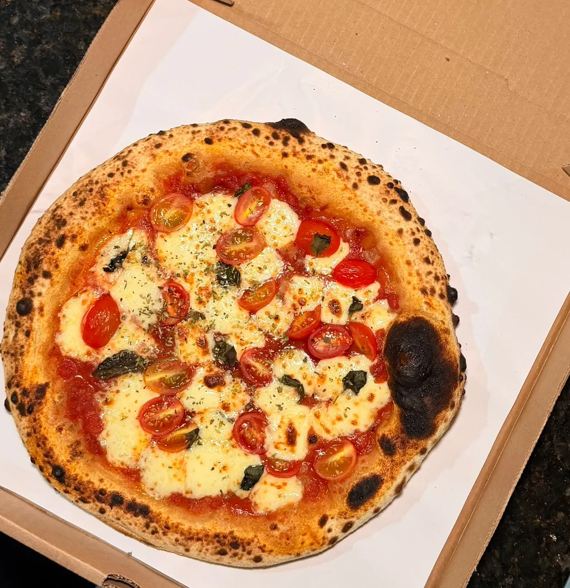</div>
</section>

<!-- SUMÁRIO -->
<section class="page">
  <div class="folio"><span>Sumário</span><span>DOBRO Pizzas · Brandbook</span></div>
  <div class="body">
    <h2>O que está neste manual</h2>
    <div class="toc">
      <div class="ch"><span class="n">00</span><span class="t">Como usar e diagnóstico</span><span class="p">03</span></div>
      <div class="ch"><span class="n">01</span><span class="t">Essência: ideia, manifesto, plataforma e personalidade</span><span class="p">05</span></div>
      <div class="ch"><span class="n">02</span><span class="t">Tom de voz</span><span class="p">09</span></div>
      <div class="ch"><span class="n">03</span><span class="t">Logotipo: anatomia, versões, proteção e usos incorretos</span><span class="p">10</span></div>
      <div class="ch"><span class="n">04</span><span class="t">Paleta e combinações</span><span class="p">14</span></div>
      <div class="ch"><span class="n">05</span><span class="t">Tipografia e aplicações</span><span class="p">16</span></div>
      <div class="ch"><span class="n">06</span><span class="t">Elementos gráficos</span><span class="p">18</span></div>
      <div class="ch"><span class="n">07</span><span class="t">Fotografia e direção de arte</span><span class="p">19</span></div>
      <div class="ch"><span class="n">08</span><span class="t">Embalagens e delivery</span><span class="p">21</span></div>
      <div class="ch"><span class="n">09</span><span class="t">Uniformes e equipe</span><span class="p">24</span></div>
      <div class="ch"><span class="n">10</span><span class="t">Papelaria e fidelização</span><span class="p">25</span></div>
      <div class="ch"><span class="n">11</span><span class="t">Cardápio impresso e digital</span><span class="p">26</span></div>
      <div class="ch"><span class="n">12</span><span class="t">Redes sociais</span><span class="p">27</span></div>
      <div class="ch"><span class="n">13</span><span class="t">Publicidade externa</span><span class="p">28</span></div>
      <div class="ch"><span class="n">14</span><span class="t">Regras de consistência</span><span class="p">29</span></div>
      <div class="ch"><span class="n">15</span><span class="t">Especificações para produção</span><span class="p">30</span></div>
      <div class="ch"><span class="n">16</span><span class="t">Biblioteca: inventário e matriz de aplicação</span><span class="p">31</span></div>
      <div class="ch"><span class="n">17</span><span class="t">Pendências e checklist de aprovação</span><span class="p">32</span></div>
    </div>
  </div>
  <div class="foot"><span>02</span><span>Consulte antes de criar ou aprovar qualquer peça</span></div>
</section>

<!-- 00 COMO USAR -->
<section class="page">
  <div class="folio"><span>00 · Como usar este manual</span><span>DOBRO Pizzas · Brandbook</span></div>
  <div class="body cols-5-7">
    <div class="stack">
      <p class="eyebrow">Para quem é</p>
      <h2>Um manual para quem cria, imprime e atende.</h2>
      <p class="small">Designers, social media, fotógrafos, gráficas, fornecedores de embalagem e a própria equipe. O objetivo é que qualquer pessoa produza uma peça nova sem precisar reconstruir a lógica da marca.</p>
      <p class="small muted">Este manual separa com clareza o que já é oficial da marca do que é recomendação desta edição. Cada regra traz um selo.</p>
    </div>
    <div class="stack">
      <p class="eyebrow">Legenda de status</p>
      <div class="kv">
        <div class="k"><span class="st of">Oficial</span></div><div>Definido pela marca e já em uso: logo, paleta, fontes, manifesto, assinatura. Não muda sem aprovação da direção.</div>
        <div class="k"><span class="st re">Recomendação</span></div><div>Regra técnica proposta por este manual a partir do material oficial (ex.: área de proteção, tamanhos mínimos). Vale até ser revista.</div>
        <div class="k"><span class="st su">Sugestão</span></div><div>Extensão nova do sistema (ex.: ícones, padronagem, textos de campanha). Precisa de aprovação antes de produzir.</div>
        <div class="k"><span class="st ac">A confirmar</span></div><div>Informação estimada ou dependente de terceiros: gráfica, fabricante, dados da empresa. Validar antes de imprimir.</div>
      </div>
      <p class="xs muted">Mockups ilustrativos e dados fictícios aparecem sempre identificados como tal. Nenhum produto gerado por IA é apresentado como foto real.</p>
    </div>
  </div>
  <div class="foot"><span>03</span><span>Edição 02 · revisão completa da edição 01</span></div>
</section>

<!-- 00 DIAGNÓSTICO -->
<section class="page linho">
  <div class="folio"><span>00 · Diagnóstico da marca</span><span>DOBRO Pizzas · Brandbook</span></div>
  <div class="body cols-2">
    <div class="stack">
      <p class="eyebrow">O que existe hoje</p>
      <table class="tbl">
        <tr><th>Ativo</th><th>Situação</th><th>Status</th></tr>
        <tr><td>Logotipo</td><td>PNG oficial (verde sobre linho) e vetor SVG traçado a partir dele</td><td><span class="st ac">Vetor original</span></td></tr>
        <tr><td>Submarca (ramo)</td><td>Extraída do próprio logo, sem alteração de desenho</td><td><span class="st of">Oficial</span></td></tr>
        <tr><td>Paleta</td><td>7 cores com HEX, RGB e CMYK no brandbook de origem</td><td><span class="st of">Oficial</span></td></tr>
        <tr><td>Tipografia</td><td>Poppins (interface) e Lora (editorial), ambas Google Fonts</td><td><span class="st of">Oficial</span></td></tr>
        <tr><td>Fotografia</td><td>9 fotos reais de produto feitas em celular</td><td><span class="st re">Ampliar acervo</span></td></tr>
        <tr><td>Embalagens</td><td>Mockups ilustrativos de caixa, sacola e papelaria</td><td><span class="st ac">Fornecedor</span></td></tr>
        <tr><td>Digital</td><td>Cardápio digital e gestor já na identidade nova</td><td><span class="st of">Em uso</span></td></tr>
      </table>
    </div>
    <div class="stack">
      <p class="eyebrow">Inconsistências encontradas</p>
      <ul class="dos no">
        <li>O fundo do arquivo PNG do logo é #E5DDD4, um pouco diferente do Linho oficial #E8D8D1. Use o Linho oficial em novas peças.</li>
        <li>O logo só existe em PNG; o SVG deste manual foi traçado automaticamente. Pedir ao designer original o arquivo vetorial (AI, PDF ou SVG).</li>
        <li>Os valores CMYK do brandbook de origem são conversões teóricas; precisam de prova de cor na gráfica, principalmente sobre kraft.</li>
        <li>A prancha de origem usava uma pizza gerada por IA. Esta edição usa apenas fotos reais.</li>
      </ul>
      <p class="eyebrow" style="margin-top:6px">Oportunidades</p>
      <ul class="dos">
        <li>Os dois ramos espelhados são um símbolo forte e fácil de bordar, carimbar e repetir: base para selos e padronagens.</li>
        <li>O processo (fermentação longa, forno) é um diferencial que pode aparecer em toda embalagem e post.</li>
      </ul>
    </div>
  </div>
  <div class="foot"><span>04</span><span>Levantamento feito sobre os arquivos do projeto em outubro de 2026</span></div>
</section>

<!-- 01 IDEIA -->
<section class="page">
  <div class="folio"><span>01 · Essência · A ideia da marca</span><span><span class="st of">Oficial</span></span></div>
  <div class="body cols-7-5">
    <div class="stack">
      <p class="eyebrow">Big idea</p>
      <h2>O poder do dobro: abundância com critério.</h2>
      <p class="lede">A maioria das pizzarias compete por preço ou por rapidez. A DOBRO nasce de outra premissa: fazer mais, e fazer melhor. "Dobro" não é só quantidade; é tempo, sabor e afeto acima do comum.</p>
      <div class="pillars" style="margin-top:6px">
        <div class="pillar"><span class="big">O dobro de tempo</span><p class="small">Massa de fermentação lenta, de 48 a 72 horas. Mais leve, mais aerada, de digestão fácil.</p></div>
        <div class="pillar"><span class="big">O dobro de sabor</span><p class="small">Ingredientes escolhidos, linguiça Blumenau artesanal, queijos nobres e toques autorais como o Hot Honey.</p></div>
        <div class="pillar"><span class="big">O dobro de afeto</span><p class="small">Abrir uma caixa da DOBRO em casa é um momento de celebração e partilha.</p></div>
      </div>
    </div>
    <div class="stack" style="grid-template-rows:minmax(0,1fr) auto;height:100%">
      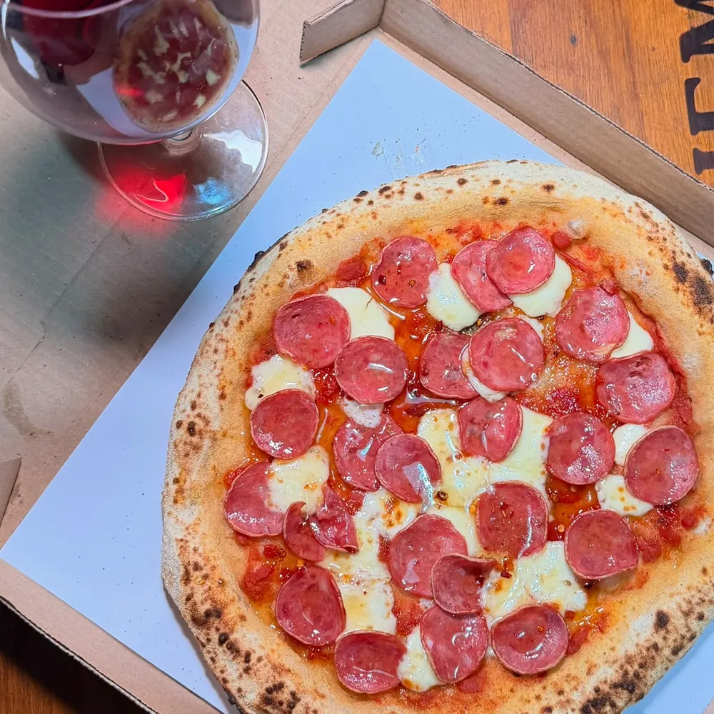
      <p class="xs muted">Foto real: Calabresa Hot Honey, a receita que melhor resume o "dobro de sabor".</p>
    </div>
  </div>
  <div class="foot"><span>05</span><span>Fonte: brandbook de origem da DOBRO</span></div>
</section>

<!-- 01 MANIFESTO -->
<section class="page dark">
  <div class="folio"><span>01 · Essência · Manifesto</span><span><span class="st of">Oficial</span></span></div>
  <div class="body cols-7-5">
    <div class="manifesto">
      <p>A vida é curta demais para comer pizza comum.</p>
      <p>Acreditamos no tempo que a massa pede para respirar, no estalo da lenha aquecendo a pedra e no aroma do manjericão fresco ao tocar o calor.</p>
      <p>Para nós, pizza não é refeição rápida: é motivo de celebração. É onde a técnica italiana encontra a alma brasileira dos recheios generosos.</p>
      <p>Servimos com fartura porque quem senta à mesa conosco merece o melhor. Não fazemos o simples quando podemos fazer com excelência. Não entregamos o básico quando podemos entregar o dobro.</p>
      <p><strong>DOBRO Pizzas. O dobro de sabor, o dobro de afeto.</strong></p>
    </div>
    <div class="stack" style="align-content:end">
      <svg class="ramo" style="width:110px;fill:var(--trigo)" viewBox="0 0 192 152" aria-hidden="true"><use href="#rm" width="192" height="152"/></svg>
      <p class="eyebrow" style="margin-top:10px">Para que serve</p>
      <p class="small muted">O manifesto é a crença da marca escrita em voz alta. Não vai inteiro em anúncios: é a fonte de onde saem frases, legendas e a postura da equipe. Na dúvida sobre um texto, pergunte se ele cabe aqui.</p>
    </div>
  </div>
  <div class="foot"><span>06</span><span>Assinatura oficial: "O dobro de sabor, o dobro de afeto."</span></div>
</section>

<!-- 01 PLATAFORMA -->
<section class="page">
  <div class="folio"><span>01 · Essência · Plataforma de marca</span><span>DOBRO Pizzas · Brandbook</span></div>
  <div class="body cols-4-8">
    <div class="stack">
      <p class="eyebrow">Como a marca se posiciona</p>
      <h2>Pizzaria artesanal contemporânea premium.</h2>
      <p class="small muted">Os itens com selo "A confirmar" são hipóteses estratégicas desta edição, construídas a partir do brandbook de origem e do cardápio. Valide com a direção antes de usar em campanhas.</p>
      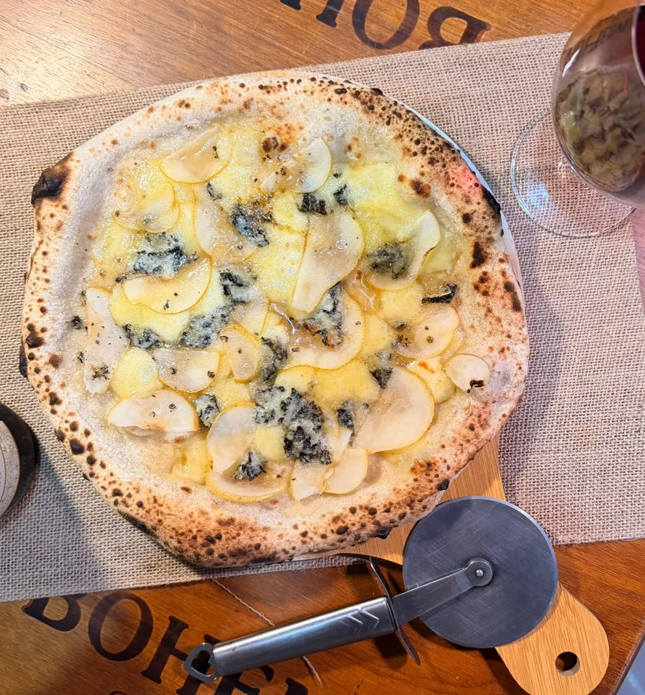
    </div>
    <div class="kv">
      <div class="k">Propósito <span class="st ac">A confirmar</span></div><div>Transformar a pizza de todo dia em um momento de celebração, com tempo, técnica e generosidade.</div>
      <div class="k">Posicionamento <span class="st of">Oficial</span></div><div>Pizzaria artesanal contemporânea premium. Ticket médio-alto, experiência autoral no salão e delivery com embalagem protetora e abertura memorável.</div>
      <div class="k">Proposta de valor <span class="st ac">A confirmar</span></div><div>Massa de fermentação longa, receitas autorais e ingredientes nobres, entregues com o cuidado de quem recebe em casa.</div>
      <div class="k">Público-alvo <span class="st ac">A confirmar</span></div><div>Adultos de 25 a 50 anos, casais e famílias que valorizam comida bem feita e trocam a pizza de rede por uma experiência artesanal; pedem em ocasiões de encontro, no fim de semana.</div>
      <div class="k">Atributos <span class="st re">Recomendação</span></div><div>Artesanal · generosa · calorosa · confiante · celebrativa.</div>
      <div class="k">Diferenciais <span class="st of">Oficial</span></div><div>Fermentação de 48 a 72 h, forno de alta temperatura, receitas autorais (Hot Honey, Pera & Mel, Blumenau) e sandubas na massa da casa.</div>
      <div class="k">Território visual <span class="st of">Oficial</span></div><div>Oliveira, trigo, forno a lenha e linho cru: natural, quente e sofisticado, sem clichês de pizzaria (toalha xadrez, bandeira italiana, chef bigodudo).</div>
    </div>
  </div>
  <div class="foot"><span>07</span><span>História da marca: a ser escrita com a direção da DOBRO</span></div>
</section>

<!-- 01 PERSONALIDADE -->
<section class="page">
  <div class="folio"><span>01 · Essência · Personalidade</span><span><span class="st re">Recomendação</span></span></div>
  <div class="body cols-5-7">
    <div class="stack">
      <p class="eyebrow">Se a DOBRO fosse uma pessoa</p>
      <h2>O anfitrião artesão.</h2>
      <p class="lede">Alguém que domina o ofício, recebe bem e capricha em cada detalhe, sem pose. Fala de ingredientes com orgulho e de pessoas com carinho.</p>
      <p class="small muted">A personalidade orienta decisões: o tom de um post, a música do salão, a forma de pedir desculpa por um atraso.</p>
    </div>
    <div class="traits">
      <div class="trait"><b>Generosa</b><span class="small">Porções fartas, atenção extra, mimos inesperados.</span><span class="no">exagerada ou desperdiçadora</span></div>
      <div class="trait"><b>Artesanal</b><span class="small">Mostra o processo: massa com tempo, forno, mãos.</span><span class="no">rústica descuidada</span></div>
      <div class="trait"><b>Calorosa</b><span class="small">Recebe como em casa, trata pelo nome.</span><span class="no">íntima demais ou desleixada</span></div>
      <div class="trait"><b>Confiante</b><span class="small">Sabe o que faz e explica com clareza.</span><span class="no">arrogante ou gourmet de vitrine</span></div>
      <div class="trait"><b>Celebrativa</b><span class="small">Pizza é encontro; cada pedido é uma ocasião.</span><span class="no">barulhenta ou infantil</span></div>
    </div>
  </div>
  <div class="foot"><span>08</span><span>Arquétipo: Anfitrião + Artesão</span></div>
</section>

<!-- 02 TOM DE VOZ -->
<section class="page linho">
  <div class="folio"><span>02 · Tom de voz</span><span><span class="st of">Oficial</span></span></div>
  <div class="body cols-5-7">
    <div class="stack">
      <p class="eyebrow">Como a DOBRO fala</p>
      <h2>Como quem recebe em casa e entende do ofício.</h2>
      <p class="small"><b>Acolhedora:</b> cumprimenta, agradece, chama pelo nome.<br><b>Sensorial:</b> descreve aroma, textura, calor.<br><b>Precisa:</b> diz o ingrediente e o tempo de verdade.<br><b>Leve:</b> frases curtas, sem jargão, sem exagero.</p>
      <p class="eyebrow" style="margin-top:4px">Vocabulário da casa</p>
      <div class="lexicon"><span>redonda</span><span>fornada</span><span>massa com tempo</span><span>borda aerada</span><span>ponto de ouro</span><span>partilhar</span><span>casa</span></div>
    </div>
    <div class="voice">
      <div class="h">Situação</div><div class="h">Como a DOBRO fala</div><div class="h">Evitar</div>
      <div>Boas-vindas</div><div class="say">"Boa noite! Bem-vindo à DOBRO. O forno já está aceso e a massa no ponto."</div><div class="avoid">"Oi, vai querer o quê?"</div>
      <div>Descrição</div><div class="say">"Calabresa levemente tostada, finalizada com o nosso Hot Honey picante."</div><div class="avoid">"Pizza de calabresa com mel."</div>
      <div>Espera</div><div class="say">"Sua redonda acabou de sair do forno e já está a caminho, quente e crocante."</div><div class="avoid">"O motoboy já saiu."</div>
      <div>Atraso</div><div class="say">"A noite está cheia e sua pizza vai demorar mais 10 minutos. Já estamos cuidando dela."</div><div class="avoid">"Tá atrasado, aguarde."</div>
      <div>Promoção</div><div class="say">"Terça de forno cheio: a segunda redonda sai pela metade."</div><div class="avoid">"MEGA PROMO!!! CORRE!!!"</div>
      <div>Agradecimento</div><div class="say">"Obrigado por partilhar essa noite com a DOBRO."</div><div class="avoid">"Valeu, até a próxima."</div>
    </div>
  </div>
  <div class="foot"><span>09</span><span>Exemplo de promoção é ilustrativo, não é oferta vigente</span></div>
</section>

<!-- 03 ANATOMIA -->
<section class="page">
  <div class="folio"><span>03 · Logotipo · Anatomia</span><span><span class="st of">Oficial</span></span></div>
  <div class="body cols-7-5">
    <div class="anatomy">
      <div class="anat">
        <svg class="logo" viewBox="0 0 950.4 205" aria-label="Logo DOBRO Pizzas"><use href="#lg" width="950.4" height="205"/></svg>
        <span class="pin up" style="left:50%"><i>1</i><em>Nome</em></span>
        <span class="pin up" style="left:9%"><i>2</i><em>Ramo</em></span>
        <span class="pin down" style="left:30%;top:62%"><i>3</i><em>Linha de base</em></span>
        <span class="pin down" style="left:50%"><i>4</i><em>Descritor</em></span>
      </div>
    </div>
    <div class="stack">
      <p class="eyebrow">Cada parte tem um porquê</p>
      <div class="parts">
        <div class="part"><i>1</i><p class="small"><b>Nome "DOBRO"</b>Serifa em caixa alta e peso forte. A serifa traz tradição e ofício; o peso transmite fartura e segurança.</p></div>
        <div class="part"><i>2</i><p class="small"><b>Ramos botânicos espelhados</b>Oliveira e trigo, as matérias-primas nobres da pizza. Dois ramos iguais, um de cada lado: a ideia de "dobro" desenhada.</p></div>
        <div class="part"><i>3</i><p class="small"><b>Linha de base</b>Une os ramos e sustenta o nome, como a pedra do forno sustenta a pizza. Dá estabilidade à leitura.</p></div>
        <div class="part"><i>4</i><p class="small"><b>Descritor "Pizzas"</b>Menor e mais leve. Diz o que a marca faz sem competir com o nome.</p></div>
      </div>
      <p class="small muted">O logo é um desenho único e fixo. Use sempre o arquivo oficial; nunca redesenhe nem reescreva o nome com outra fonte.</p>
    </div>
  </div>
  <div class="foot"><span>10</span><span>Arquivo: public/dobro/logo-dobro.svg</span></div>
</section>

<!-- 03 VERSÕES -->
<section class="page">
  <div class="folio"><span>03 · Logotipo · Versões e submarca</span><span>DOBRO Pizzas · Brandbook</span></div>
  <div class="body" style="display:grid;grid-template-rows:auto minmax(0,1fr);gap:14px">
    <h2>Uma marca, versões para cada fundo.</h2>
    <div class="versions">
      <div class="version"><div class="stage" style="background:var(--linho)"><svg class="logo" viewBox="0 0 950.4 205" aria-hidden="true"><use href="#lg" width="950.4" height="205"/></svg></div><div class="info"><b>Principal</b><span class="st of">Oficial</span><br>Verde sobre Linho. Preferencial: cardápio, site, caixa, sacola.</div></div>
      <div class="version"><div class="stage" style="background:var(--verde)"><svg class="logo" style="fill:var(--linho)" viewBox="0 0 950.4 205" aria-hidden="true"><use href="#lg" width="950.4" height="205"/></svg></div><div class="info"><b>Negativa</b><span class="st re">Recomendação</span><br>Linho sobre Verde. Fundos escuros, uniforme, fachada à noite.</div></div>
      <div class="version"><div class="stage" style="background:var(--terra)"><svg class="logo" style="fill:var(--linho)" viewBox="0 0 950.4 205" aria-hidden="true"><use href="#lg" width="950.4" height="205"/></svg></div><div class="info"><b>Secundária</b><span class="st of">Oficial</span><br>Linho sobre Terracota. Peças de apoio, avental, cartões.</div></div>
      <div class="version"><div class="stage" style="background:#fff"><svg class="logo" style="fill:var(--espresso)" viewBox="0 0 950.4 205" aria-hidden="true"><use href="#lg" width="950.4" height="205"/></svg></div><div class="info"><b>Monocromática</b><span class="st re">Recomendação</span><br>Espresso sobre branco. Impressão em uma cor, carimbo, talão.</div></div>
      <div class="version"><div class="stage" style="background:var(--verde)"><svg class="ramo" style="width:30%;fill:var(--trigo)" viewBox="0 0 192 152" aria-hidden="true"><use href="#rm" width="192" height="152"/></svg></div><div class="info"><b>Submarca</b><span class="st of">Oficial</span><br>Dourado sobre Verde. Selos, bordados, ícone do app, favicon.</div></div>
      <div class="version"><div class="stage" style="background:var(--blush)"><svg class="ramo" style="width:30%" viewBox="0 0 192 152" aria-hidden="true"><use href="#rm" width="192" height="152"/></svg></div><div class="info"><b>Submarca clara</b><span class="st re">Recomendação</span><br>Verde sobre Blush ou Linho. Lacres, papel antigordura.</div></div>
    </div>
  </div>
  <div class="foot"><span>11</span><span>A submarca nunca substitui o logo na primeira aparição de uma peça</span></div>
</section>

<!-- 03 PROTEÇÃO -->
<section class="page">
  <div class="folio"><span>03 · Logotipo · Área de proteção e tamanho mínimo</span><span><span class="st re">Recomendação</span></span></div>
  <div class="body cols-7-5">
    <div class="clear">
      <div class="box">
        <svg class="logo" viewBox="0 0 950.4 205" aria-hidden="true"><use href="#lg" width="950.4" height="205"/></svg>
        <span class="x" style="top:0;left:0">x</span><span class="x" style="top:0;right:0">x</span>
        <span class="x" style="bottom:0;left:0">x</span><span class="x" style="bottom:0;right:0">x</span>
      </div>
    </div>
    <div class="stack">
      <p class="eyebrow">Respiro</p>
      <h3>Deixe o logo respirar.</h3>
      <p class="small">A medida <b>x</b> é a altura da letra "O" de DOBRO. Nenhum texto, borda ou imagem pode invadir essa margem. Quanto mais espaço livre, mais nobre a marca parece.</p>
      <hr class="rule">
      <p class="eyebrow">Tamanho mínimo</p>
      <dl class="spec">
        <dt>Logo, digital</dt><dd>120 px de largura</dd>
        <dt>Logo, impresso</dt><dd>30 mm de largura</dd>
        <dt>Logo, bordado</dt><dd>60 mm de largura</dd>
        <dt>Submarca, digital</dt><dd>16 px</dd>
        <dt>Submarca, impressa</dt><dd>6 mm</dd>
        <dt>Submarca, bordada</dt><dd>20 mm</dd>
      </dl>
      <p class="xs muted">Abaixo desses tamanhos o descritor "Pizzas" e os ramos perdem leitura. Valores de referência desta edição; confirme o bordado com o fornecedor.</p>
    </div>
  </div>
  <div class="foot"><span>12</span><span>Norma desta edição do manual</span></div>
</section>

<!-- 03 INCORRETOS -->
<section class="page">
  <div class="folio"><span>03 · Logotipo · Usos incorretos</span><span>DOBRO Pizzas · Brandbook</span></div>
  <div class="body" style="display:grid;grid-template-rows:auto minmax(0,1fr);gap:14px">
    <h2>O que nunca fazer com o logo.</h2>
    <div class="donts">
      <div class="dont"><div class="stage"><span class="bad">×</span><svg class="logo" style="transform:scaleX(1.4)" viewBox="0 0 950.4 205" aria-hidden="true"><use href="#lg" width="950.4" height="205"/></svg></div><p>Esticar ou achatar.</p></div>
      <div class="dont"><div class="stage"><span class="bad">×</span><svg class="logo" style="fill:#C2410C" viewBox="0 0 950.4 205" aria-hidden="true"><use href="#lg" width="950.4" height="205"/></svg></div><p>Usar cores fora da paleta.</p></div>
      <div class="dont"><div class="stage"><span class="bad">×</span><svg class="logo" style="transform:rotate(-12deg)" viewBox="0 0 950.4 205" aria-hidden="true"><use href="#lg" width="950.4" height="205"/></svg></div><p>Girar ou inclinar.</p></div>
      <div class="dont"><div class="stage"><span class="bad">×</span><svg class="logo" style="filter:drop-shadow(4px 5px 0 #745240)" viewBox="0 0 950.4 205" aria-hidden="true"><use href="#lg" width="950.4" height="205"/></svg></div><p>Aplicar sombra, contorno ou 3D.</p></div>
      <div class="dont"><div class="stage" style="background:url(img/zucchini.webp) center/cover"><span class="bad">×</span><svg class="logo" viewBox="0 0 950.4 205" aria-hidden="true"><use href="#lg" width="950.4" height="205"/></svg></div><p>Pôr sobre foto movimentada sem área lisa.</p></div>
      <div class="dont"><div class="stage" style="background:var(--verde)"><span class="bad">×</span><svg class="logo" style="fill:#14560f" viewBox="0 0 950.4 205" aria-hidden="true"><use href="#lg" width="950.4" height="205"/></svg></div><p>Combinar cores sem contraste.</p></div>
      <div class="dont"><div class="stage"><span class="bad">×</span><span style="font-family:Arial,sans-serif;font-weight:800;font-size:28px;color:var(--verde);letter-spacing:.04em">DOBRO</span></div><p>Reescrever o nome com outra fonte.</p></div>
      <div class="dont"><div class="stage"><span class="bad">×</span><svg class="logo" style="clip-path:inset(0 0 0 20%)" viewBox="0 0 950.4 205" aria-hidden="true"><use href="#lg" width="950.4" height="205"/></svg></div><p>Cortar ou separar os ramos.</p></div>
    </div>
  </div>
  <div class="foot"><span>13</span><span>Na dúvida, use a versão principal sobre Linho</span></div>
</section>

<!-- 04 PALETA -->
<section class="page">
  <div class="folio"><span>04 · Paleta de cores</span><span><span class="st of">Oficial</span> <span class="st ac">CMYK: prova de cor</span></span></div>
  <div class="body" style="display:grid;grid-template-rows:auto minmax(0,1fr) auto;gap:12px">
    <div class="cols-7-5" style="height:auto;align-items:end">
      <h2>Cores tiradas da cozinha: oliveira, trigo, forno e linho cru.</h2>
      <p class="small muted">Verde e Linho são a assinatura. Espresso garante leitura. Dourado, Blush e as terracotas são acentos: aparecem pouco e por isso valem mais.</p>
    </div>
    <div class="palette">
      <div class="swatch"><div class="chip" style="background:#083D07;color:#E8D8D1">Verde Floresta</div><div class="data"><b>#083D07</b>RGB 8 61 7<br>CMYK 87 0 89 76<span class="use">Logo, ação, embalagem.</span></div></div>
      <div class="swatch"><div class="chip" style="background:#E8D8D1;color:#44210F">Linho Natural</div><div class="data"><b>#E8D8D1</b>RGB 232 216 209<br>CMYK 0 7 10 9<span class="use">Fundo oficial, papéis.</span></div></div>
      <div class="swatch"><div class="chip" style="background:#44210F;color:#E8D8D1">Espresso Escuro</div><div class="data"><b>#44210F</b>RGB 68 33 15<br>CMYK 0 51 78 73<span class="use">Textos e títulos.</span></div></div>
      <div class="swatch"><div class="chip" style="background:#D5AF7A;color:#44210F">Dourado Trigo</div><div class="data"><b>#D5AF7A</b>RGB 213 175 122<br>CMYK 0 18 43 16<span class="use">Selos e detalhes.</span></div></div>
      <div class="swatch"><div class="chip" style="background:#F6E3DF;color:#44210F">Blush Suave</div><div class="data"><b>#F6E3DF</b>RGB 246 227 223<br>CMYK 0 8 9 4<span class="use">Cards, promoções.</span></div></div>
      <div class="swatch"><div class="chip" style="background:#745240;color:#E8D8D1">Terracota Artesanal</div><div class="data"><b>#745240</b>RGB 116 82 64<br>CMYK 0 29 45 55<span class="use">Texto secundário, avental.</span></div></div>
      <div class="swatch"><div class="chip" style="background:#E4C5B9;color:#44210F">Nude Terracota</div><div class="data"><b>#E4C5B9</b>RGB 228 197 185<br>CMYK 0 14 19 11<span class="use">Divisórias, papel seda.</span></div></div>
    </div>
    <div>
      <p class="eyebrow" style="margin:0">Proporção de uso em uma peça <span class="st re">Recomendação</span></p>
      <div class="ratio" role="img" aria-label="Linho 50%, Verde 25%, Espresso 12%, Dourado 6%, demais 7%">
        <span style="width:50%;background:#E8D8D1;color:#44210F">LINHO 50%</span><span style="width:25%;background:#083D07;color:#E8D8D1">VERDE 25%</span><span style="width:12%;background:#44210F;color:#E8D8D1">ESPRESSO 12%</span><span style="width:6%;background:#D5AF7A;color:#44210F">6%</span><span style="width:7%;background:#E4C5B9;color:#44210F">7%</span>
      </div>
    </div>
  </div>
  <div class="foot"><span>14</span><span>Valores HEX, RGB e CMYK do brandbook de origem</span></div>
</section>

<!-- 04 COMBINAÇÕES -->
<section class="page">
  <div class="folio"><span>04 · Paleta · Combinações aprovadas</span><span><span class="st re">Recomendação</span></span></div>
  <div class="body" style="display:grid;grid-template-rows:auto auto minmax(0,1fr);gap:14px">
    <div class="cols-7-5" style="height:auto;align-items:end">
      <h2>Pares que funcionam, com contraste medido.</h2>
      <p class="small muted">Contraste calculado pelo padrão WCAG. A partir de 4,5:1 serve para texto corrido; abaixo de 3:1, só para elementos decorativos grandes.</p>
    </div>
    <div class="combos">
      <div class="combo" style="background:#E8D8D1;color:#083D07"><span class="t">Verde sobre Linho</span><span class="m">9,0 : 1 · texto e logo</span></div>
      <div class="combo" style="background:#083D07;color:#E8D8D1"><span class="t">Linho sobre Verde</span><span class="m">9,0 : 1 · texto e logo</span></div>
      <div class="combo" style="background:#083D07;color:#D5AF7A"><span class="t">Dourado sobre Verde</span><span class="m">6,1 : 1 · títulos, selos</span></div>
      <div class="combo" style="background:#F6E3DF;color:#083D07"><span class="t">Verde sobre Blush</span><span class="m">10,1 : 1 · promoções</span></div>
      <div class="combo" style="background:#E8D8D1;color:#44210F"><span class="t">Espresso sobre Linho</span><span class="m">10,3 : 1 · texto corrido</span></div>
      <div class="combo" style="background:#745240;color:#E8D8D1"><span class="t">Linho sobre Terracota</span><span class="m">5,0 : 1 · apoio, avental</span></div>
      <div class="combo" style="background:#D5AF7A;color:#44210F"><span class="t">Espresso sobre Dourado</span><span class="m">7,0 : 1 · etiquetas</span></div>
      <div class="combo" style="background:#E8D8D1;color:#D5AF7A;position:relative"><span class="bad" style="top:auto;bottom:10px;left:auto;right:10px">×</span><span class="t">Dourado sobre Linho</span><span class="m" style="color:#745240">1,5 : 1 · nunca para texto</span></div>
    </div>
    <div class="cols-3" style="min-height:0">
      <figure class="fig">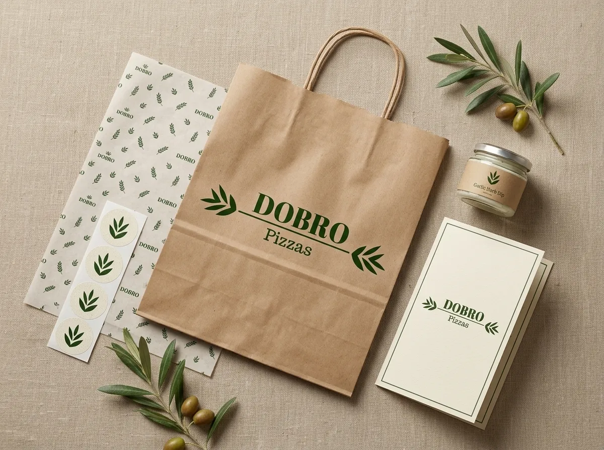<figcaption><b>Embalagem:</b> verde chapado sobre kraft ou linho.</figcaption></figure>
      <figure class="fig">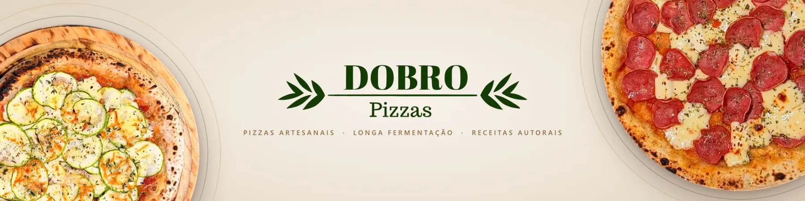<figcaption><b>Digital:</b> linho de fundo, verde no logo, terracota no texto.</figcaption></figure>
      <figure class="fig">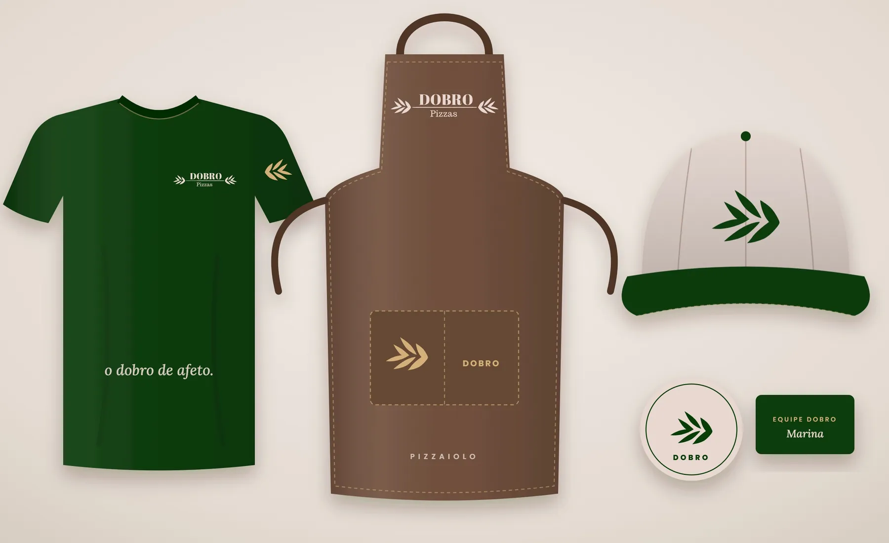<figcaption><b>Equipe:</b> verde, terracota e linho com detalhes dourados.</figcaption></figure>
    </div>
  </div>
  <div class="foot"><span>15</span><span>Contraste calculado sobre os valores HEX oficiais</span></div>
</section>

<!-- 05 TIPOGRAFIA -->
<section class="page">
  <div class="folio"><span>05 · Tipografia</span><span><span class="st of">Oficial</span></span></div>
  <div class="body cols-2">
    <div class="stack">
      <div class="specimen">
        <p class="eyebrow" style="margin:0">Principal · interface e leitura</p>
        <span class="aa" style="font-family:var(--sans);font-weight:700">Aa</span>
        <h3 style="font-family:var(--sans);font-weight:700">Poppins</h3>
        <p class="alpha" style="font-family:var(--sans)">ABCDEFGHIJKLMNOPQRSTUVWXYZ abcdefghijklmnopqrstuvwxyz 0123456789 €</p>
        <p class="small">Geométrica e clara. Produtos, descrições, preços, botões, PDV e WhatsApp. Pesos 300 a 700.</p>
      </div>
      <div class="specimen">
        <p class="eyebrow" style="margin:0">Secundária · títulos e assinaturas</p>
        <span class="aa" style="font-family:var(--serif)">Aa</span>
        <h3>Lora</h3>
        <p class="alpha" style="font-family:var(--serif)">ABCDEFGHIJKLMNOPQRSTUVWXYZ abcdefghijklmnopqrstuvwxyz <i>itálico</i></p>
        <p class="small">Serifa clássica com calor. Slogans, títulos editoriais, capas e frases afetivas em itálico.</p>
      </div>
    </div>
    <div class="stack">
      <p class="eyebrow">Hierarquia</p>
      <div class="scale">
        <div><small>Título</small><span style="font-family:var(--serif);font-size:32px;line-height:1.1;font-weight:600;color:var(--verde)">Pizza é celebração</span></div>
        <div><small>Assinatura</small><span style="font-family:var(--serif);font-style:italic;font-size:21px;color:var(--terra)">o dobro de sabor, o dobro de afeto.</span></div>
        <div><small>Subtítulo</small><span style="font-weight:700;font-size:17px">Calabresa Hot Honey</span></div>
        <div><small>Texto</small><span style="font-size:13.5px">Massa de fermentação lenta, molho pomodoro rústico e mel picante da casa.</span></div>
        <div><small>Rótulo</small><span style="font-size:10.5px;font-weight:700;letter-spacing:.24em;text-transform:uppercase;color:var(--terra)">Fermentação lenta</span></div>
      </div>
      <p class="small muted">Lora para emocionar, Poppins para informar. Nunca mais de duas famílias na mesma peça. Se uma fonte não estiver disponível no fornecedor, use Georgia (serifa) e Arial (sem serifa) apenas como contingência.</p>
    </div>
  </div>
  <div class="foot"><span>16</span><span>Ambas gratuitas no Google Fonts</span></div>
</section>

<!-- 05 TIPOGRAFIA APLICADA -->
<section class="page linho">
  <div class="folio"><span>05 · Tipografia aplicada</span><span><span class="st re">Recomendação</span></span></div>
  <div class="body cols-3" style="height:100%">
    <div class="stack" style="background:#fff;padding:20px;border-radius:3px;align-content:start">
      <p class="eyebrow">Item de cardápio com preço</p>
      <div style="display:flex;justify-content:space-between;align-items:baseline;gap:10px"><span style="font-weight:700;font-size:17px">Pera &amp; Mel</span><span style="font-weight:700;font-size:16px;color:var(--verde);font-variant-numeric:tabular-nums">€ 00,00</span></div>
      <p style="font-family:var(--serif);font-style:italic;font-size:13px;color:var(--terra)">Gorgonzola, mozzarella, lâminas de pera, nozes e mel de flor de laranjeira.</p>
      <hr class="rule">
      <p class="xs muted">Nome: Poppins 700 · Preço: Poppins 700, verde, números tabulares · Descrição: Lora itálico, terracota. Preço demonstrativo.</p>
    </div>
    <div class="stack" style="background:var(--verde);color:var(--linho);padding:20px;border-radius:3px;align-content:start">
      <p class="eyebrow" style="color:var(--trigo)">Chamada promocional</p>
      <p style="font-size:10px;letter-spacing:.24em;text-transform:uppercase;font-weight:700;color:var(--trigo)">Novidade da casa</p>
      <p style="font-family:var(--serif);font-size:30px;line-height:1.05;font-weight:600">Chegou a Calabresa Hot Honey.</p>
      <p style="font-size:13px">Peça hoje pelo cardápio digital.</p>
      <hr class="rule">
      <p class="xs" style="color:var(--nude)">Rótulo: Poppins 700 caixa alta · Título: Lora 600 · Ação: Poppins 400. Máximo de 8 palavras no título.</p>
    </div>
    <div class="stack" style="background:#C8A276;padding:20px;border-radius:3px;align-content:start;color:var(--espresso)">
      <p class="eyebrow" style="color:var(--espresso)">Informação de embalagem</p>
      <p style="font-family:var(--serif);font-style:italic;font-size:22px;color:var(--verde)">Sua redonda chegou.</p>
      <p style="font-size:10px;letter-spacing:.2em;text-transform:uppercase;font-weight:700">Fermentação lenta · 48 a 72 h</p>
      <p style="font-size:11px;line-height:1.5">Para reaquecer: forno a 200 °C por 4 a 5 minutos, direto na grade.</p>
      <hr class="rule">
      <p class="xs">Sobre kraft: textos a partir de 7 pt, sem degradê, tinta chapada. Instrução de reaquecimento: sugestão a validar com a cozinha.</p>
    </div>
  </div>
  <div class="foot"><span>17</span><span>Preços e instruções demonstrativos</span></div>
</section>

<!-- 06 ELEMENTOS GRÁFICOS -->
<section class="page dark">
  <div class="folio"><span>06 · Elementos gráficos</span><span><span class="st su">Sugestão</span></span></div>
  <div class="body cols-2">
    <div class="stack">
      <p class="eyebrow">Ícones lineares</p>
      <p class="small muted">Traço fino e constante, cantos arredondados, em Dourado ou Linho sobre verde (Verde sobre claro). Inspirados nos ícones da prancha de origem.</p>
      <div class="icons">
        <div class="icon"><svg viewBox="0 0 64 64" fill="none" stroke="#D5AF7A" stroke-width="2.4" stroke-linecap="round" stroke-linejoin="round"><path d="M10 14 Q32 4 54 14 L32 58 Z"/><path d="M14 20 Q32 12 50 20"/><circle cx="30" cy="26" r="3"/><circle cx="38" cy="34" r="2.5"/><circle cx="28" cy="40" r="2.5"/></svg><span>Fatia artesanal</span></div>
        <div class="icon"><svg viewBox="0 0 64 64" fill="none" stroke="#D5AF7A" stroke-width="2.4" stroke-linecap="round" stroke-linejoin="round"><path d="M8 52 L8 34 Q8 12 32 12 Q56 12 56 34 L56 52 Z"/><path d="M4 52 L60 52"/><path d="M22 52 L22 40 Q22 30 32 30 Q42 30 42 40 L42 52"/><path d="M32 48 Q27 43 31 37 Q32 41 35 42 Q37 45 32 48 Z"/></svg><span>Forno a lenha</span></div>
        <div class="icon"><svg viewBox="0 0 64 64" fill="none" stroke="#D5AF7A" stroke-width="2.4" stroke-linecap="round" stroke-linejoin="round"><path d="M32 60 L32 10"/><path d="M32 18 Q24 14 24 6 Q32 10 32 18 Z"/><path d="M32 18 Q40 14 40 6 Q32 10 32 18 Z"/><path d="M32 30 Q22 26 22 17 Q32 21 32 30 Z"/><path d="M32 30 Q42 26 42 17 Q32 21 32 30 Z"/><path d="M32 42 Q22 38 22 29 Q32 33 32 42 Z"/><path d="M32 42 Q42 38 42 29 Q32 33 32 42 Z"/></svg><span>Trigo</span></div>
        <div class="icon"><svg viewBox="0 0 64 64" fill="none" stroke="#D5AF7A" stroke-width="2.4" stroke-linecap="round" stroke-linejoin="round"><path d="M18 24 L46 24 L44 54 Q44 58 40 58 L24 58 Q20 58 20 54 Z"/><path d="M16 24 L48 24"/><path d="M24 24 L24 16 L40 16 L40 24"/><path d="M28 36 Q28 42 32 42 Q36 42 36 36"/><path d="M48 8 L36 30"/><path d="M46 6 L52 10 L50 13 L44 9 Z"/></svg><span>Hot Honey</span></div>
        <div class="icon"><svg viewBox="0 0 64 64" fill="none" stroke="#D5AF7A" stroke-width="2.4" stroke-linecap="round" stroke-linejoin="round"><path d="M44 12 Q36 10 34 18"/><path d="M34 18 Q50 22 48 36 Q46 52 20 58 Q14 59 16 54 Q34 44 30 26 Q30 20 34 18 Z"/><path d="M28 34 Q32 44 22 52"/></svg><span>Pimenta suave</span></div>
        <div class="icon"><svg viewBox="0 0 64 64" fill="none" stroke="#D5AF7A" stroke-width="2.4" stroke-linecap="round" stroke-linejoin="round"><circle cx="32" cy="32" r="24"/><circle cx="32" cy="32" r="18"/><path d="M32 14 L32 50 M14 32 L50 32"/><path d="M42 8 L50 4 M46 12 L56 10"/><circle cx="25" cy="25" r="2.5"/><circle cx="40" cy="38" r="2.5"/></svg><span>Redonda inteira</span></div>
      </div>
    </div>
    <div class="stack" style="grid-template-rows:auto minmax(0,1fr) auto;height:100%">
      <p class="eyebrow">Padronagem botânica</p>
      <div class="pattern" id="pattern" role="img" aria-label="Padronagem de ramos verdes sobre linho"></div>
      <p class="small muted">Ramos da submarca em grade alternada, girados em 0° e 180°. Para papel antigordura, papel de seda, fundo de embalagem e redes sociais. Densidade baixa: o fundo deve respirar.</p>
    </div>
  </div>
  <div class="foot"><span>18</span><span>Ícones e padronagem derivados dos ramos do logo</span></div>
</section>

<!-- 07 FOTOGRAFIA -->
<section class="page">
  <div class="folio"><span>07 · Fotografia · Princípios</span><span><span class="st re">Recomendação</span></span></div>
  <div class="body cols-5-7">
    <div class="stack">
      <p class="eyebrow">Só produto real</p>
      <h2>A foto mostra a pizza que o cliente recebe.</h2>
      <ul class="dos">
        <li>Produto real, recém-saído do forno, com a borda de fermentação visível.</li>
        <li>Vista de cima ou a 45°, luz natural e quente, lateral.</li>
        <li>Superfícies da marca: madeira, linho cru, caixa kraft, tábua de servir.</li>
        <li>No máximo dois objetos de apoio: taça, cortador, azeite.</li>
      </ul>
      <ul class="dos no">
        <li>Imagens de banco ou geradas por IA representando o produto.</li>
        <li>Filtros pesados, saturação exagerada, estúdio frio.</li>
        <li>Texto escrito por cima da comida.</li>
      </ul>
    </div>
    <div class="pgrid">
      <figure class="wide"><figcaption>Clássica Dobro</figcaption></figure>
      <figure>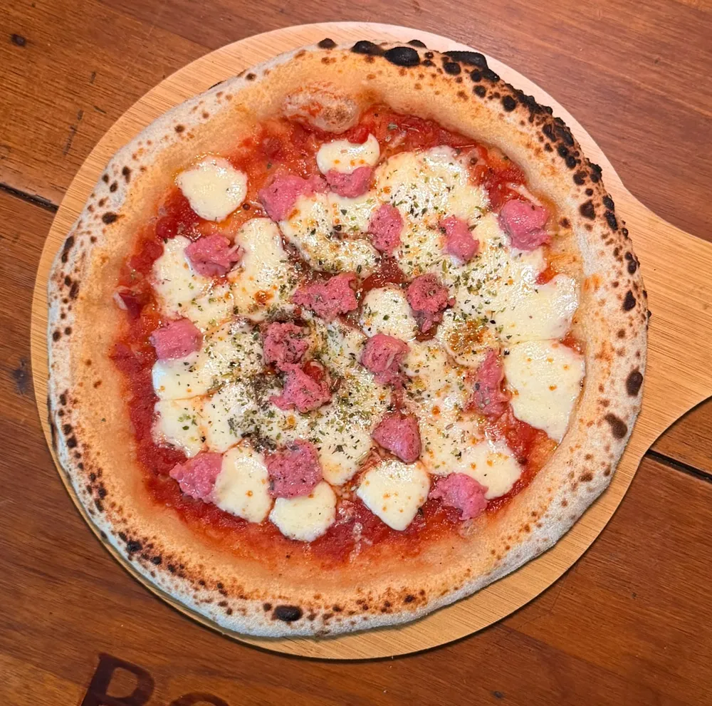<figcaption>Blumenau</figcaption></figure>
      <figure>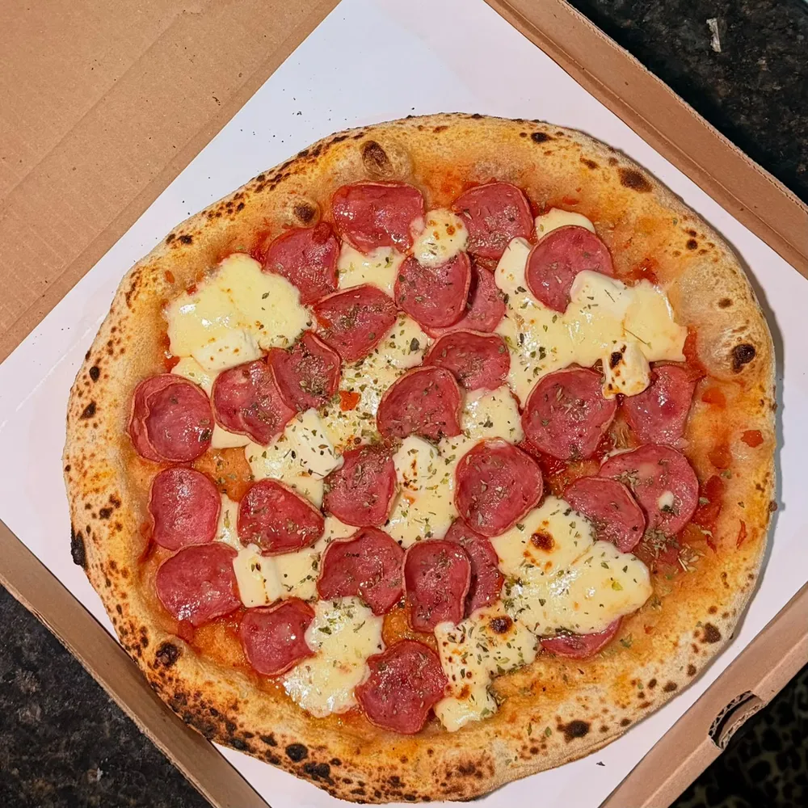<figcaption>Calabresa Cream Cheese</figcaption></figure>
      <figure>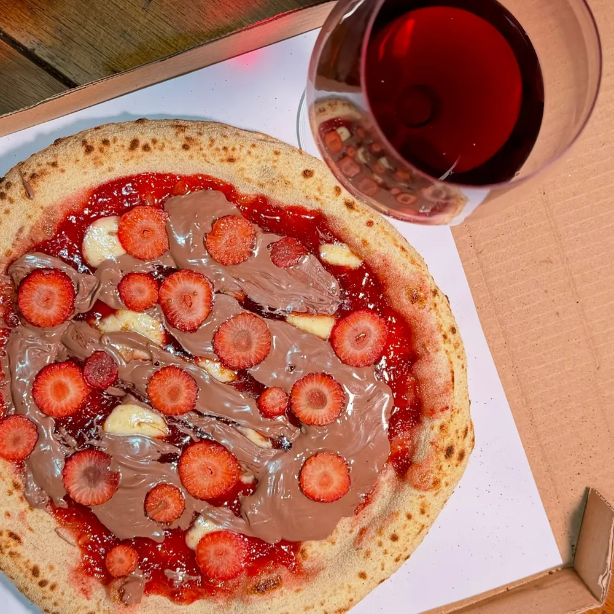<figcaption>Avelã, Morango &amp; Amor</figcaption></figure>
      <figure>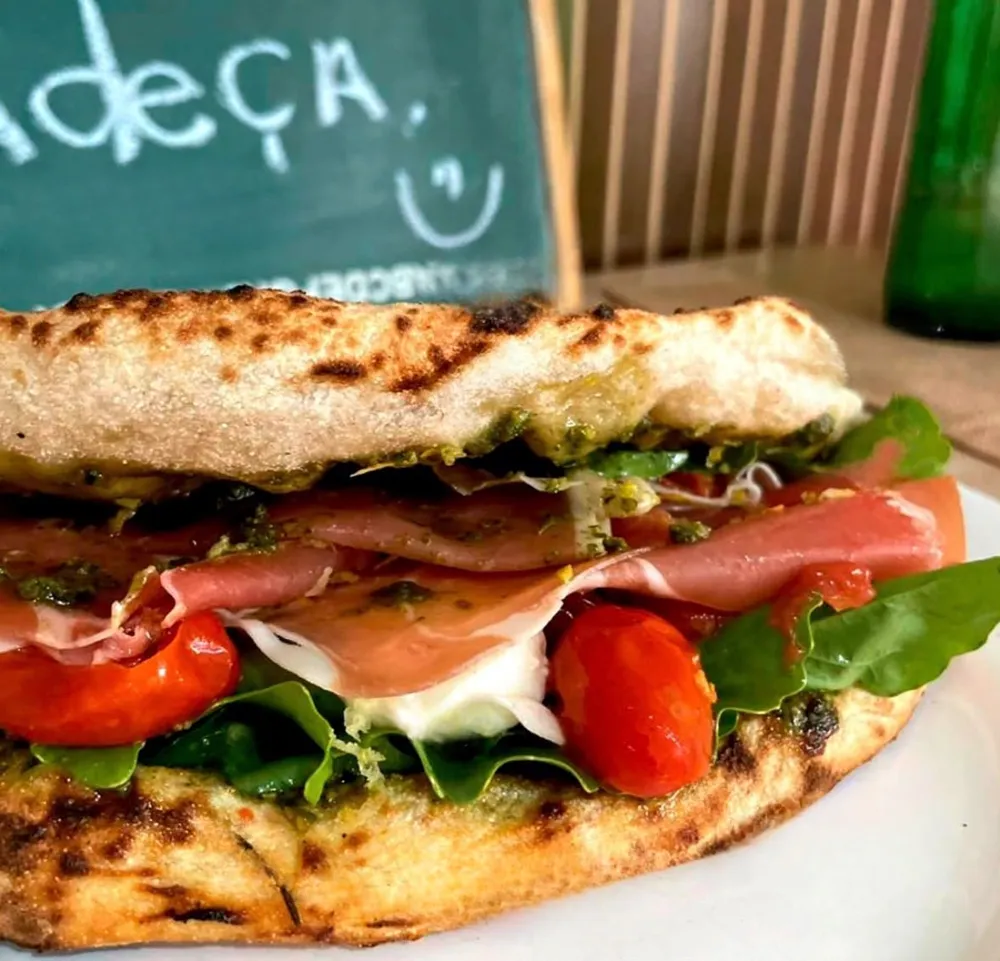<figcaption>Sanduba de Parma</figcaption></figure>
    </div>
  </div>
  <div class="foot"><span>19</span><span>Todas as fotos de comida deste manual são produtos reais da DOBRO</span></div>
</section>

<!-- 07 DIREÇÃO DE ARTE -->
<section class="page">
  <div class="folio"><span>07 · Fotografia · Direção de arte</span><span><span class="st re">Recomendação</span></span></div>
  <div class="body" style="display:grid;grid-template-rows:auto minmax(0,1fr);gap:12px">
    <h2>Guia rápido para o fotógrafo.</h2>
    <div class="dirgrid">
      <div class="dir"><b>Iluminação</b><p>Luz natural lateral, de janela, ou um único ponto suave. Sombras presentes, nunca duras.</p></div>
      <div class="dir"><b>Temperatura</b><p>Quente, entre 4.500 e 5.200 K. Brancos levemente creme, nunca azulados.</p></div>
      <div class="dir"><b>Ângulos</b><p>Zenital (de cima) para pizza inteira; 30 a 45° para sandubas, fatias e bebidas.</p></div>
      <div class="dir"><b>Enquadramento</b><p>Produto ocupando 60 a 70% do quadro; respiro para o logo em peças com texto.</p></div>
      <div class="dir"><b>Cenário e texturas</b><p>Madeira escura ou clara, linho, kraft, mármore discreto. Ramos de oliveira e trigo como apoio.</p></div>
      <div class="dir"><b>Pizza inteira</b><p>Recém-saída, borda com manchas do forno, ingredientes distribuídos, sem fatiar.</p></div>
      <div class="dir"><b>Fatia</b><p>Fatia levantada com queijo esticando, a 45°, fundo desfocado da pizza.</p></div>
      <div class="dir"><b>Ingredientes</b><p>Crus e frescos, em potes de cerâmica ou sobre a tábua, junto da massa aberta.</p></div>
      <div class="dir"><b>Pessoas</b><p>Mãos do pizzaiolo, forno, partilha à mesa. Gente real da equipe, uniforme oficial.</p></div>
      <div class="dir"><b>Embalagem</b><p>Caixa aberta mostrando a pizza, sacola em uso, lacre visível.</p></div>
      <div class="dir"><b>Delivery</b><p>Entrega na porta, caixa nas mãos, luz de fim de tarde.</p></div>
      <div class="dir"><b>Redes sociais</b><p>Verticais 4:5 e 9:16, close de textura, movimento (fatia, mel escorrendo).</p></div>
    </div>
  </div>
  <div class="foot"><span>20</span><span>Pendente: sessão profissional com equipe, ambiente e fachada</span></div>
</section>

<!-- 08 EMBALAGENS: CAIXA -->
<section class="page">
  <div class="folio"><span>08 · Embalagens e delivery · Caixa de pizza</span><span><span class="st ac">Faca do fabricante</span></span></div>
  <div class="body cols-7-5">
    <figure class="fig">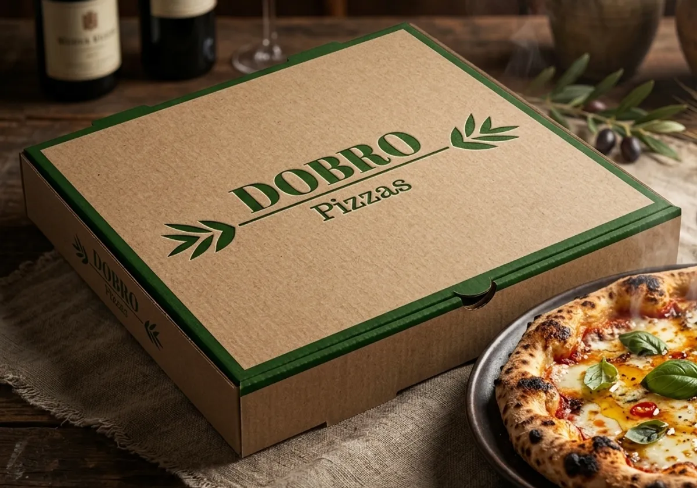<figcaption><b>Mockup ilustrativo.</b> Caixa em papelão ondulado kraft, bordas em Verde Floresta e logo em silk ou relevo seco.</figcaption></figure>
    <div class="stack">
      <p class="eyebrow">Como aplicar</p>
      <h3>O outdoor da marca dentro da casa do cliente.</h3>
      <table class="tbl">
        <tr><td>Tampa</td><td>Logo principal centralizado, largura de 45 a 55% da tampa; ramos da padronagem opcionais nos cantos.</td></tr>
        <tr><td>Laterais</td><td>Logo negativo em faixa verde ou logo verde direto no kraft; @dobropizza.</td></tr>
        <tr><td>Interna</td><td>Frase em Lora itálico: "Abra, partilhe e repita." <span class="st su">Sugestão</span></td></tr>
        <tr><td>Impressão</td><td>1 ou 2 cores chapadas (verde e dourado). Sem degradês sobre kraft.</td></tr>
        <tr><td>Tamanhos</td><td>Referência de 25, 30 e 35 cm, conforme o cardápio. <span class="st ac">A confirmar</span></td></tr>
      </table>
      <p class="xs muted">A arte final deve ser montada sobre a faca técnica enviada pelo fabricante e aprovada com prova física.</p>
    </div>
  </div>
  <div class="foot"><span>21</span><span>Mockup ilustrativo · não é foto de produção</span></div>
</section>

<!-- 08 EMBALAGENS: SACOLA -->
<section class="page">
  <div class="folio"><span>08 · Embalagens e delivery · Sacola de papel</span><span><span class="st su">Sugestão</span></span></div>
  <div class="body cols-5-7">
    <figure class="fig">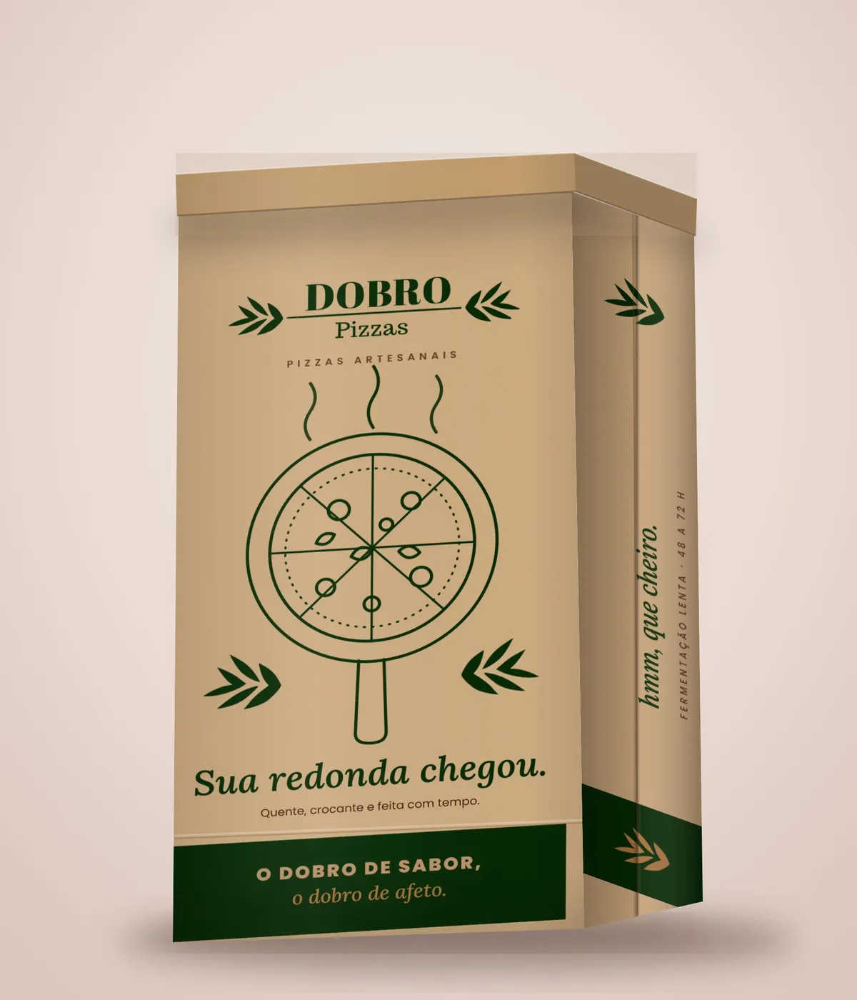<figcaption><b>Mockup ilustrativo</b> com o logo oficial vetorial.</figcaption></figure>
    <div class="stack">
      <p class="eyebrow">Anatomia da sacola</p>
      <h3>Uma frase de chegada e o processo na lateral.</h3>
      <table class="tbl">
        <tr><td>Frente</td><td>Logo principal no topo; ilustração linear da pizza na pá; "Sua redonda chegou." em Lora itálico; faixa verde com a assinatura.</td></tr>
        <tr><td>Lateral</td><td>"hmm, que cheiro." e "Fermentação lenta · 48 a 72 h".</td></tr>
        <tr><td>Material</td><td>Kraft natural, gramatura mínima de referência 80 g/m², fundo quadrado. <span class="st ac">A confirmar</span></td></tr>
        <tr><td>Impressão</td><td>Flexografia em 1 cor (verde) ou 2 cores (verde + dourado).</td></tr>
        <tr><td>Fechamento</td><td>Dobra no topo + lacre adesivo com a submarca.</td></tr>
      </table>
      <p class="xs muted">Versão para balcão: mesma arte em sacola com alça torcida (ver papelaria, página 25).</p>
    </div>
  </div>
  <div class="foot"><span>22</span><span>Mockup ilustrativo · validar medidas com o fornecedor</span></div>
</section>

<!-- 08 KIT DE DELIVERY -->
<section class="page">
  <div class="folio"><span>08 · Embalagens e delivery · Kit de fechamento</span><span><span class="st su">Sugestão</span></span></div>
  <div class="body" style="display:grid;grid-template-rows:minmax(0,1fr) auto;gap:12px">
    <div class="surface kit" style="grid-template-columns:repeat(2,auto);gap:22px 70px;justify-content:center;align-content:center">
      <div class="stack" style="justify-items:center">
        <div class="seal shadow"><svg class="ramo" viewBox="0 0 192 152" aria-hidden="true"><use href="#rm" width="192" height="152"/></svg><small>DOBRO</small></div>
        <span class="xs muted">Lacre de segurança Ø 50 mm</span>
      </div>
      <div class="stack" style="justify-items:center">
        <div class="label shadow">
          <div class="row"><span style="font-weight:700;letter-spacing:.14em;font-size:9px;color:var(--terra)">PEDIDO</span><span class="big">#1042</span></div>
          <div class="row"><span>Cliente</span><b>Ana M.</b></div>
          <div class="row"><span>Itens</span><b>2 redondas · 1 bebida</b></div>
          <div class="row"><span>Saiu do forno</span><b>20:41</b></div>
        </div>
        <span class="xs muted">Etiqueta de pedido 80 × 50 mm · dados fictícios</span>
      </div>
      <div class="stack" style="justify-items:center">
        <div class="tcard shadow"><svg class="ramo" style="width:42px" viewBox="0 0 192 152" aria-hidden="true"><use href="#rm" width="192" height="152"/></svg><p>Obrigado por partilhar essa noite com a DOBRO.</p><span style="font-size:8.5px;letter-spacing:.2em;font-weight:700;color:var(--terra)">@DOBROPIZZA</span></div>
        <span class="xs muted">Cartão de agradecimento A7</span>
      </div>
      <div class="stack" style="justify-items:center">
        <div class="shadow" id="paper" style="width:200px;aspect-ratio:1;background:#F7F1EA;position:relative;overflow:hidden;border-radius:2px"></div>
        <span class="xs muted">Papel antigordura com padronagem</span>
      </div>
    </div>
    <p class="small muted">Montados em CSS com o logo oficial, para orientar o fornecedor. Itens do capítulo de embalagens ainda a desenvolver: caixa de fatia, embalagem de sobremesa, pote de molho, fita personalizada, guardanapo e bolsa térmica (ver pendências).</p>
  </div>
  <div class="foot"><span>23</span><span>Peças ilustrativas · medidas de referência a validar</span></div>
</section>

<!-- 09 UNIFORMES -->
<section class="page">
  <div class="folio"><span>09 · Uniformes e equipe</span><span><span class="st su">Sugestão</span></span></div>
  <div class="body cols-7-5">
    <figure class="fig"><figcaption><b>Mockup ilustrativo.</b> Camiseta, avental, boné, adesivo e crachá.</figcaption></figure>
    <div class="stack">
      <p class="eyebrow">Peças e aplicação</p>
      <table class="tbl">
        <tr><th>Peça</th><th>Aplicação</th></tr>
        <tr><td>Camiseta</td><td>Verde Floresta. Logo negativo no peito esquerdo (8 a 10 cm), serigrafia; ramo dourado na manga, bordado.</td></tr>
        <tr><td>Avental</td><td>Terracota, sarja ou lona. Logo linho no peito (18 a 22 cm), bordado; costura dourada; bolso com submarca.</td></tr>
        <tr><td>Boné</td><td>Linho com aba verde. Ramo bordado em verde na frente (5 a 6 cm).</td></tr>
        <tr><td>Cozinha</td><td>Touca ou bandana verde com ramo pequeno; dólmã linho com logo no peito. <span class="st ac">A confirmar</span></td></tr>
        <tr><td>Entregador</td><td>Jaqueta verde com logo negativo nas costas (25 cm) e faixa refletiva. <span class="st ac">A confirmar</span></td></tr>
        <tr><td>Crachá</td><td>Verde, "EQUIPE DOBRO" em Poppins e o nome em Lora itálico.</td></tr>
      </table>
      <p class="xs muted">Bordado: no máximo 3 cores de linha; linha de base do logo não pode ficar abaixo de 1 mm. Medidas de referência; validar com a confecção.</p>
    </div>
  </div>
  <div class="foot"><span>24</span><span>Pendente: fotos da equipe vestindo as peças</span></div>
</section>

<!-- 10 PAPELARIA -->
<section class="page">
  <div class="folio"><span>10 · Papelaria e fidelização</span><span><span class="st su">Sugestão</span></span></div>
  <div class="body" style="display:grid;grid-template-rows:minmax(0,1fr) auto;gap:12px">
    <div class="surface" style="grid-template-columns:repeat(2,auto);gap:30px 44px;justify-content:center;align-content:center">
      <div class="stack" style="justify-items:center;gap:10px">
        <div style="display:flex;gap:16px">
          <div class="bcard front shadow"><svg class="logo" viewBox="0 0 950.4 205" aria-hidden="true"><use href="#lg" width="950.4" height="205"/></svg></div>
          <div class="bcard back shadow">
            <div><div class="name">Nome Sobrenome</div><div class="role">Gerente</div></div>
            <div class="info">+351 900 000 000<br>nome@dobropizza.com<br>@dobropizza</div>
            <svg class="ramo" style="width:28px;justify-self:end;margin-top:-26px" viewBox="0 0 192 152" aria-hidden="true"><use href="#rm" width="192" height="152"/></svg>
          </div>
        </div>
        <span class="xs muted">Cartão de visita 85 × 55 mm, frente e verso · dados fictícios</span>
      </div>
      <div class="stack" style="justify-items:center;gap:10px">
        <div class="loyal shadow">
          <div style="display:flex;justify-content:space-between;align-items:center"><svg class="logo" style="width:110px;fill:var(--linho)" viewBox="0 0 950.4 205" aria-hidden="true"><use href="#lg" width="950.4" height="205"/></svg><span style="font-size:8px;letter-spacing:.2em;font-weight:700;color:var(--trigo)">FIDELIDADE</span></div>
          <div class="stamps">
            <span class="on"><svg class="ramo" viewBox="0 0 192 152" aria-hidden="true"><use href="#rm" width="192" height="152"/></svg></span><span class="on"><svg class="ramo" viewBox="0 0 192 152" aria-hidden="true"><use href="#rm" width="192" height="152"/></svg></span><span class="on"><svg class="ramo" viewBox="0 0 192 152" aria-hidden="true"><use href="#rm" width="192" height="152"/></svg></span><span></span><span></span><span></span><span></span><span></span><span></span><span></span>
          </div>
          <span style="font-family:var(--serif);font-style:italic;font-size:12px">A cada 10 redondas, a próxima é por nossa conta.</span>
        </div>
        <span class="xs muted">Cartão fidelidade · mecânica de exemplo</span>
      </div>
      <div class="stack" style="justify-items:center;gap:10px">
        <div class="gift shadow">
          <div><svg class="logo" style="width:100px" viewBox="0 0 950.4 205" aria-hidden="true"><use href="#lg" width="950.4" height="205"/></svg><span style="font-family:var(--serif);font-size:20px;color:var(--verde);font-weight:600;line-height:1.05">Vale uma noite de pizza</span></div>
          <div class="cut"></div>
          <div><span style="font-size:8px;letter-spacing:.2em;font-weight:700;color:var(--terra)">VALE-PRESENTE</span><span style="font-size:9.5px;line-height:1.5">Para: ________<br>De: ________<br>Validade: __/__/__</span></div>
        </div>
        <span class="xs muted">Vale-presente com canhoto</span>
      </div>
      <div class="stack" style="justify-items:center;gap:10px">
        <figure class="fig" style="width:300px;height:150px;grid-template-rows:1fr"></figure>
        <span class="xs muted">Sacola de balcão, adesivos e cardápio dobrável · mockup ilustrativo</span>
      </div>
    </div>
    <p class="small muted">Pendente para a próxima edição: papel timbrado, envelope, pasta, bloco, agenda personalizada (capa, lombada e miolo) e caneta.</p>
  </div>
  <div class="foot"><span>25</span><span>Dados de contato reais a confirmar com a DOBRO</span></div>
</section>

<!-- 11 CARDÁPIO -->
<section class="page">
  <div class="folio"><span>11 · Cardápio impresso e digital</span><span><span class="st re">Recomendação</span></span></div>
  <div class="body cols-4-8">
    <div class="surface"><div class="menu-sheet shadow">
      <svg class="logo" viewBox="0 0 950.4 205" aria-hidden="true"><use href="#lg" width="950.4" height="205"/></svg>
      <div class="menu-sec">Assinaturas da casa</div>
      <div style="display:grid;align-content:start">
        <div class="mi"><b>Calabresa Hot Honey</b><span>€ 00</span><p>Calabresa defumada tostada, mozzarella e mel picante da casa.</p></div>
        <div class="mi"><b>Pera &amp; Mel</b><span>€ 00</span><p>Gorgonzola, pera fresca, nozes e mel de laranjeira.</p></div>
        <div class="mi"><b>Linguiça Blumenau</b><span>€ 00</span><p>Linguiça defumada artesanal, pomodoro, cebola roxa e alecrim.</p></div>
        <div class="mi"><b>Zucchini Al Forno</b><span>€ 00</span><p>Abobrinha no azeite, parmesão e raspas de limão siciliano.</p></div>
        <div class="mi"><b>Clássica Dobro</b><span>€ 00</span><p>Tomates pelados, mozzarella, tomatinhos confitados e manjericão.</p></div>
        <div class="mi"><b>Avelã, Morango &amp; Amor</b><span>€ 00</span><p>Creme de cacau e avelã, morangos frescos e amêndoas.</p></div>
      </div>
      <span style="text-align:center;font-family:var(--serif);font-style:italic;font-size:9px;color:var(--terra)">o dobro de sabor, o dobro de afeto.</span>
    </div></div>
    <div class="stack" style="grid-template-rows:auto minmax(0,1fr) auto;height:100%">
      <div>
        <p class="eyebrow">Regras do cardápio</p>
        <ul class="dos" style="grid-template-columns:1fr 1fr;gap:6px 22px">
          <li>Nome em Poppins 700, descrição em Lora itálico, preço alinhado à direita.</li>
          <li>Seções em rótulo caixa alta, entre fios terracota.</li>
          <li>Ingredientes reais e em ordem de importância.</li>
          <li>Fundo Linho; foto só na capa ou em destaques.</li>
        </ul>
      </div>
      <figure class="fig"><figcaption><b>Cardápio digital (em uso).</b> Capa em Linho com logo, assinatura em Poppins e fotos reais nas laterais. Bebidas com fundo padrão da marca.</figcaption></figure>
      <p class="xs muted">Nomes e descrições reais do cardápio; preços demonstrativos (€ 00). Pendente: cardápio de balcão, de parede, de combos e de bebidas.</p>
    </div>
  </div>
  <div class="foot"><span>26</span><span>Preços oficiais a preencher a partir do gestor</span></div>
</section>

<!-- 12 REDES SOCIAIS -->
<section class="page linho">
  <div class="folio"><span>12 · Redes sociais</span><span><span class="st su">Sugestão</span></span></div>
  <div class="body" style="display:grid;grid-template-columns:auto 1fr;gap:28px;height:100%">
    <div class="phone"><div class="screen">
      <div class="ig-top"><span class="ig-av"><svg class="ramo" viewBox="0 0 192 152" aria-hidden="true"><use href="#rm" width="192" height="152"/></svg></span>dobropizza</div>
      <div class="ig-bio"><b>DOBRO Pizzas</b><br>Pizzas artesanais · longa fermentação · receitas autorais</div>
      <div class="feed">
        <div></div><div style="background:var(--verde);display:grid;place-items:center"><svg class="ramo" style="width:40%;fill:var(--trigo)" viewBox="0 0 192 152" aria-hidden="true"><use href="#rm" width="192" height="152"/></svg></div><div></div>
        <div>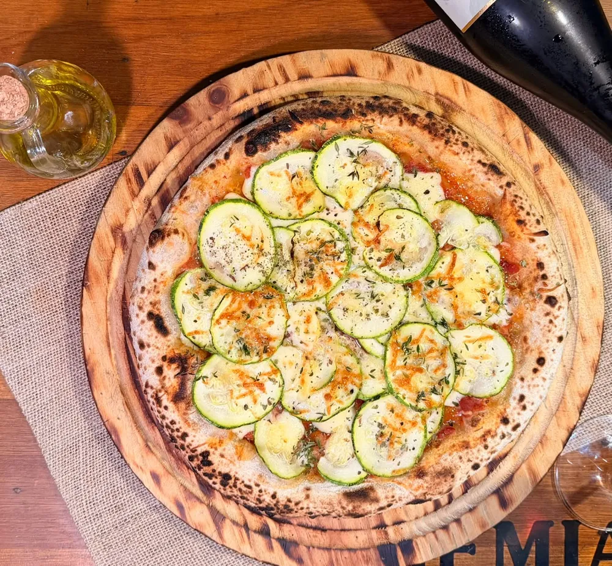</div><div>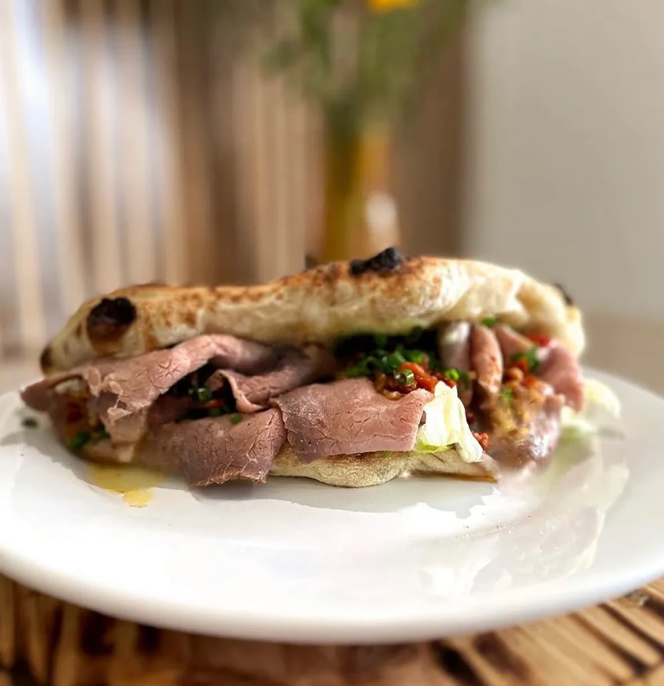</div><div style="background:var(--linho);display:grid;place-items:center;font-family:var(--serif);font-style:italic;font-size:9px;color:var(--verde);text-align:center;padding:4px">48 h de massa</div>
        <div></div><div></div><div></div>
        <div style="background:var(--terra);display:grid;place-items:center;font-family:var(--serif);font-style:italic;font-size:9px;color:var(--linho);text-align:center;padding:4px">o dobro de afeto</div><div></div><div></div>
      </div>
    </div></div>
    <div style="display:grid;grid-template-rows:auto auto;align-content:center;gap:26px;min-width:0">
      <div style="display:grid;grid-template-columns:repeat(3,minmax(0,1fr)) .62fr;gap:12px;align-items:end;min-height:0">
        <div class="post shadow"><div class="ov" style="background:linear-gradient(180deg,rgba(8,61,7,.85),rgba(8,61,7,0) 45%)"><div><div class="kick" style="color:var(--trigo)">Novidade</div><div class="hl" style="color:var(--linho)">Chegou a Hot Honey.</div></div><svg class="logo" style="width:46%;fill:var(--linho);justify-self:end" viewBox="0 0 950.4 205" aria-hidden="true"><use href="#lg" width="950.4" height="205"/></svg></div></div>
        <div class="post shadow" style="background:var(--verde)"><div class="ov"><div class="kick" style="color:var(--trigo)">Bastidores</div><div><div class="hl" style="color:var(--linho);font-size:34px">48 a 72 h</div><p style="color:var(--nude);font-size:11px;margin-top:6px">É o tempo que a nossa massa descansa antes do forno.</p></div><svg class="ramo" style="width:28%;fill:var(--trigo)" viewBox="0 0 192 152" aria-hidden="true"><use href="#rm" width="192" height="152"/></svg></div></div>
        <div class="post shadow" style="background:var(--linho)"><div class="ov"><div class="kick" style="color:var(--terra)">Quem provou</div><div class="hl" style="color:var(--verde);font-size:17px;font-style:italic;font-weight:500">"A borda mais leve que já comi. Virou a pizza oficial da família."</div><span style="font-size:10px;font-weight:600;color:var(--espresso)">Cliente · depoimento de exemplo</span></div></div>
        <div class="story shadow"><div class="ov" style="position:absolute;inset:0;display:grid;align-content:end;padding:10px;background:linear-gradient(0deg,rgba(68,33,15,.85),rgba(68,33,15,0) 55%)"><span style="font-family:var(--serif);color:var(--linho);font-size:14px;line-height:1.1">Sua redonda em casa.</span><span style="margin-top:8px;background:var(--linho);color:var(--verde);font-size:8.5px;font-weight:700;letter-spacing:.12em;text-align:center;padding:5px;border-radius:99px">PEÇA AGORA</span></div></div>
      </div>
      <div class="cols-3" style="gap:16px">
        <p class="xs"><b style="color:var(--verde)">Estrutura do post:</b> rótulo (Poppins caixa alta) · título curto (Lora) · logo ou ramo no canto. Foto real ou cor chapada da paleta.</p>
        <p class="xs"><b style="color:var(--verde)">Formatos:</b> feed 1080 × 1350 (4:5); stories e reels 1080 × 1920, com 250 px livres no topo e na base.</p>
        <p class="xs"><b style="color:var(--verde)">Ritmo do feed:</b> 2 fotos de produto para cada peça de texto ou cor. Capas de destaque: ramo dourado sobre verde.</p>
      </div>
    </div>
  </div>
  <div class="foot"><span>27</span><span>Textos e depoimento demonstrativos · perfil a confirmar: @dobropizza</span></div>
</section>

<!-- 13 PUBLICIDADE EXTERNA -->
<section class="page">
  <div class="folio"><span>13 · Publicidade externa</span><span><span class="st su">Sugestão</span></span></div>
  <div class="body" style="display:grid;grid-template-columns:1fr auto;gap:30px;height:100%">
    <div class="stack" style="align-content:center">
      <p class="eyebrow">Outdoor 8 × 3 m · layout da arte</p>
      <div class="billboard shadow">
        <div class="txt">
          <svg class="logo" style="width:46%" viewBox="0 0 950.4 205" aria-hidden="true"><use href="#lg" width="950.4" height="205"/></svg>
          <div class="hl">A vida é curta demais para pizza comum.</div>
          <span style="font-size:clamp(8px,1vw,12px);letter-spacing:.2em;font-weight:700;color:var(--terra)">PEÇA PELO CARDÁPIO DIGITAL</span>
        </div>
        
      </div>
      <p class="small"><b style="color:var(--verde)">Hierarquia:</b> marca, frase principal (até 7 palavras), produto real, chamada para ação. Leitura em 3 segundos a 50 metros: nada de preço, endereço longo ou QR code.</p>
      <p class="xs muted">Formato 8 × 3 m é comum em Portugal; confirmar medidas e área útil com a exibidora. Pendente: mockup fotorrealista instalado em via urbana.</p>
    </div>
    <div class="stack" style="justify-items:center;align-content:center">
      <p class="eyebrow">Totem de entrada</p>
      <div class="totem shadow">
        <div class="top"><svg class="logo" viewBox="0 0 950.4 205" aria-hidden="true"><use href="#lg" width="950.4" height="205"/></svg></div>
        
        <div class="bot">Forno aceso</div>
      </div>
      <p class="xs muted" style="max-width:190px;text-align:center">Referência 0,60 × 1,60 m, base verde, logo negativo no topo. Validar com a fachada real.</p>
    </div>
  </div>
  <div class="foot"><span>28</span><span>Layouts de arte · não são fotos de instalação</span></div>
</section>

<!-- 14 CONSISTÊNCIA -->
<section class="page">
  <div class="folio"><span>14 · Regras de consistência</span><span><span class="st re">Recomendação</span></span></div>
  <div class="body" style="display:grid;grid-template-rows:auto minmax(0,1fr);gap:14px">
    <h2>Seis decisões que mantêm a marca reconhecível.</h2>
    <div class="donts" style="grid-template-columns:repeat(3,minmax(0,1fr))">
      <div class="dont"><div class="stage" style="background:var(--linho)"><span class="good">✓</span><div style="display:grid;gap:8px;justify-items:center"><svg class="logo" style="width:150px" viewBox="0 0 950.4 205" aria-hidden="true"><use href="#lg" width="950.4" height="205"/></svg><span style="font-family:var(--serif);font-size:18px;color:var(--verde)">Pizza é celebração</span></div></div><p><b>Um protagonista por peça.</b> Logo, frase ou produto lideram; os outros apoiam.</p></div>
      <div class="dont"><div class="stage" style="background:var(--linho)"><span class="bad">×</span><div style="display:grid;gap:2px;justify-items:center;font-weight:800;color:#C2410C"><span style="font-size:20px">SUPER PROMO!!!</span><span style="font-size:12px;color:#1d4ed8">COMPRE JÁ · OFERTA · 50% · GRÁTIS</span></div></div><p><b>Sem poluição.</b> Nada de caixa alta gritada, cores de fora ou cinco mensagens juntas.</p></div>
      <div class="dont"><div class="stage" style="padding:0"><span class="good">✓</span></div><p><b>Foto real, quente e próxima.</b> O produto ocupa a maior parte do quadro.</p></div>
      <div class="dont"><div class="stage" style="background:var(--verde)"><span class="good">✓</span><svg class="logo" style="width:150px;fill:var(--linho)" viewBox="0 0 950.4 205" aria-hidden="true"><use href="#lg" width="950.4" height="205"/></svg></div><p><b>Fundos chapados da paleta.</b> Verde, Linho, Blush ou Terracota, sem degradês.</p></div>
      <div class="dont"><div class="stage" style="background:linear-gradient(135deg,#7c3aed,#06b6d4)"><span class="bad">×</span><svg class="logo" style="width:150px;fill:#fff" viewBox="0 0 950.4 205" aria-hidden="true"><use href="#lg" width="950.4" height="205"/></svg></div><p><b>Degradês e cores de tendência</b> não fazem parte da marca.</p></div>
      <div class="dont"><div class="stage" style="background:var(--linho)"><span class="good">✓</span><div style="display:grid;gap:6px;justify-items:start;width:78%"><span style="font-size:9px;letter-spacing:.24em;font-weight:700;color:var(--terra)">RÓTULO</span><span style="font-family:var(--serif);font-size:19px;color:var(--verde);line-height:1.1">Título em Lora</span><span style="font-size:11px">Texto de apoio em Poppins.</span></div></div><p><b>Margens generosas e alinhamento à esquerda</b> para textos; centralizar só logo e frases curtas.</p></div>
    </div>
  </div>
  <div class="foot"><span>29</span><span>Ao adaptar para um formato novo, mantenha estas seis regras</span></div>
</section>

<!-- 15 ESPECIFICAÇÕES -->
<section class="page">
  <div class="folio"><span>15 · Especificações para produção</span><span><span class="st re">Referência</span> <span class="st ac">Validar com fornecedor</span></span></div>
  <div class="body cols-2">
    <div class="stack">
      <table class="tbl">
        <tr><th>Item</th><th>Impresso</th></tr>
        <tr><td>Modo de cor</td><td>CMYK. Perfil Coated FOGRA39 para papel revestido; Uncoated FOGRA29 para kraft e papel não revestido.</td></tr>
        <tr><td>Resolução</td><td>Imagens a 300 dpi no tamanho final; outdoor a 100–150 dpi na escala real.</td></tr>
        <tr><td>Sangria</td><td>3 mm em impressos; 5 cm em lonas e outdoor (ou conforme a exibidora).</td></tr>
        <tr><td>Margem de segurança</td><td>5 mm para dentro do corte em impressos pequenos.</td></tr>
        <tr><td>Arquivo final</td><td>PDF/X-4 com fontes em curvas ou incorporadas; logo sempre vetorial.</td></tr>
        <tr><td>Kraft</td><td>Tinta chapada, sem degradê, textos a partir de 7 pt. O verde escurece sobre kraft: prova obrigatória.</td></tr>
        <tr><td>Embalagens</td><td>Arte montada sobre a faca técnica do fabricante; prova física antes da tiragem.</td></tr>
      </table>
    </div>
    <div class="stack">
      <table class="tbl">
        <tr><th>Item</th><th>Digital, têxtil e sinalização</th></tr>
        <tr><td>Digital</td><td>sRGB. Logo em SVG ou PNG transparente; fotos em WebP ou JPG.</td></tr>
        <tr><td>Redes sociais</td><td>Feed 1080 × 1350 · quadrado 1080 × 1080 · stories/reels 1080 × 1920 · capa de destaque 1080 × 1080.</td></tr>
        <tr><td>Bordado</td><td>Até 3 cores de linha; logo a partir de 60 mm; ramo a partir de 20 mm; enviar arquivo vetorial ao programador do bordado.</td></tr>
        <tr><td>Serigrafia</td><td>Até 2 cores chapadas; traços a partir de 0,3 mm.</td></tr>
        <tr><td>Fachada e totem</td><td>Letreiro em ACM ou acrílico com letra-caixa; aprovar com projeto e medição no local.</td></tr>
        <tr><td>Prova de cor</td><td>Obrigatória na primeira tiragem de cada material e a cada troca de fornecedor.</td></tr>
      </table>
      <p class="xs muted">Valores de referência de mercado, não especificações industriais. Cada fornecedor pode ter exigências próprias.</p>
    </div>
  </div>
  <div class="foot"><span>30</span><span>Na dúvida, envie este manual junto com o pedido de orçamento</span></div>
</section>

<!-- 16 BIBLIOTECA -->
<section class="page">
  <div class="folio"><span>16 · Biblioteca para designers</span><span>DOBRO Pizzas · Brandbook</span></div>
  <div class="body cols-5-7">
    <div class="stack">
      <p class="eyebrow">Inventário de arquivos</p>
      <table class="tbl">
        <tr><td>Logo</td><td>public/dobro/logo-dobro.svg · logo-dobro.png</td></tr>
        <tr><td>Submarca</td><td>docs/brandbook/ebook/img/ramo.svg</td></tr>
        <tr><td>Fontes</td><td>Poppins e Lora (Google Fonts)</td></tr>
        <tr><td>Paleta</td><td>Página 14 deste manual</td></tr>
        <tr><td>Fotos de produto</td><td>public/dobro/*.jpeg</td></tr>
        <tr><td>Bebidas</td><td>public/dobro/bebida-*.webp</td></tr>
        <tr><td>Capas do cardápio</td><td>public/dobro/capa-linho-*.webp</td></tr>
        <tr><td>Mockups</td><td>docs/brandbook/mockups/</td></tr>
        <tr><td>Este manual</td><td>docs/brandbook/Brandbook-DOBRO-Pizzas.pdf · fonte editável em docs/brandbook/ebook/</td></tr>
      </table>
    </div>
    <div class="stack">
      <p class="eyebrow">Matriz de aplicação</p>
      <div class="tblwrap"><table class="tbl matrix">
        <tr><th>Peça</th><th>Logo</th><th>Neg.</th><th>Ramo</th><th>Verde</th><th>Linho</th><th>Dourado</th><th>Lora</th><th>Poppins</th><th>Foto</th><th>Padrão</th></tr>
        <tr><td>Caixa</td><td class="y">●</td><td class="o">○</td><td class="y">●</td><td class="y">●</td><td class="o">○</td><td class="o">○</td><td class="y">●</td><td class="o">○</td><td class="o">○</td><td class="y">●</td></tr>
        <tr><td>Sacola</td><td class="y">●</td><td class="o">○</td><td class="y">●</td><td class="y">●</td><td class="o">○</td><td class="y">●</td><td class="y">●</td><td class="y">●</td><td class="o">○</td><td class="o">○</td></tr>
        <tr><td>Lacre / etiqueta</td><td class="o">○</td><td class="o">○</td><td class="y">●</td><td class="y">●</td><td class="y">●</td><td class="y">●</td><td class="o">○</td><td class="y">●</td><td class="o">○</td><td class="o">○</td></tr>
        <tr><td>Uniforme</td><td class="y">●</td><td class="y">●</td><td class="y">●</td><td class="y">●</td><td class="y">●</td><td class="y">●</td><td class="y">●</td><td class="y">●</td><td class="o">○</td><td class="o">○</td></tr>
        <tr><td>Cartão de visita</td><td class="y">●</td><td class="y">●</td><td class="y">●</td><td class="y">●</td><td class="y">●</td><td class="o">○</td><td class="y">●</td><td class="y">●</td><td class="o">○</td><td class="o">○</td></tr>
        <tr><td>Cardápio</td><td class="y">●</td><td class="o">○</td><td class="o">○</td><td class="y">●</td><td class="y">●</td><td class="o">○</td><td class="y">●</td><td class="y">●</td><td class="y">●</td><td class="o">○</td></tr>
        <tr><td>Post / story</td><td class="y">●</td><td class="y">●</td><td class="y">●</td><td class="y">●</td><td class="y">●</td><td class="y">●</td><td class="y">●</td><td class="y">●</td><td class="y">●</td><td class="o">○</td></tr>
        <tr><td>Outdoor / totem</td><td class="y">●</td><td class="y">●</td><td class="o">○</td><td class="y">●</td><td class="y">●</td><td class="y">●</td><td class="y">●</td><td class="y">●</td><td class="y">●</td><td class="o">○</td></tr>
        <tr><td>Fachada</td><td class="y">●</td><td class="y">●</td><td class="y">●</td><td class="y">●</td><td class="y">●</td><td class="o">○</td><td class="o">○</td><td class="o">○</td><td class="o">○</td><td class="o">○</td></tr>
      </table></div>
      <p class="xs muted">● usar · ○ opcional ou não se aplica. Templates recomendados: post 4:5, story 9:16, cardápio A4, etiqueta 80 × 50 mm, cartão 85 × 55 mm.</p>
    </div>
  </div>
  <div class="foot"><span>31</span><span>Caminhos relativos à pasta do projeto do cardápio digital</span></div>
</section>

<!-- 17 PENDÊNCIAS + CHECKLIST -->
<section class="page dark">
  <div class="folio"><span>17 · Pendências e checklist de aprovação</span><span>DOBRO Pizzas · Brandbook</span></div>
  <div class="body cols-2">
    <div class="stack">
      <p class="eyebrow">A confirmar ou produzir</p>
      <ul class="dos">
        <li>Arquivo vetorial original do logo, feito pelo designer da marca.</li>
        <li>Prova de cor dos CMYK na gráfica, em couché e em kraft.</li>
        <li>Propósito, público-alvo e proposta de valor (hipóteses da página 7).</li>
        <li>História da marca, endereço, telefone, NIF e perfil oficial nas redes.</li>
        <li>Preços oficiais para cardápio impresso e peças promocionais.</li>
        <li>Medidas das caixas, sacolas e faca técnica com o fornecedor.</li>
        <li>Sessão de fotos profissional: equipe uniformizada, forno, salão, fachada, entrega.</li>
        <li>Mockups fotorrealistas de caixa aberta, sacola em uso, uniforme vestido, fachada, totem, outdoor, mochila e baú de moto, com o logo original aplicado sobre a foto.</li>
        <li>Papelaria completa: timbrado, envelope, agenda, bloco; embalagens de fatia, sobremesa e molho.</li>
        <li>Confirmar com a cozinha o tempo de fermentação de 48 a 72 h divulgado.</li>
      </ul>
    </div>
    <div class="stack">
      <p class="eyebrow">Checklist antes de publicar ou imprimir</p>
      <ul class="check">
        <li>O logo veio do arquivo oficial, sem distorção, com área de proteção e acima do tamanho mínimo.</li>
        <li>Só cores da paleta, em uma combinação aprovada (página 15).</li>
        <li>Só Poppins e Lora, com a hierarquia do manual.</li>
        <li>As fotos de comida são reais e seguem a direção de arte.</li>
        <li>O texto soa como a DOBRO e foi revisado (ortografia, preços, datas).</li>
        <li>Os dados de contato e as ofertas são reais e vigentes.</li>
        <li>Formato, sangria, margem e perfil de cor estão corretos para a saída.</li>
        <li>Houve prova de cor ou prova digital aprovada pelo responsável.</li>
      </ul>
      <p class="small muted" style="margin-top:8px">Este manual é vivo: toda aplicação nova entra aqui antes de ir para a rua.</p>
    </div>
  </div>
  <div class="foot"><span>32</span><span>Responsável pela aprovação: direção da DOBRO</span></div>
</section>

<!-- ENCERRAMENTO -->
<section class="page dark closing">
  <div class="inner">
    <svg class="logo" viewBox="0 0 950.4 205" aria-label="DOBRO Pizzas"><use href="#lg" width="950.4" height="205"/></svg>
    <p class="lede" style="font-style:italic;color:var(--trigo)">O dobro de sabor, o dobro de afeto.</p>
    <p class="small muted" style="max-width:52ch">Brandbook DOBRO Pizzas · Edição 02 · outubro de 2026.</p>
  </div>
</section>

</main>

<script>
  // Botanical pattern tiles (submark in an alternating 0° / 180° grid)
  (function () {
    const fill = (host, step, size, color, opacity) => {
      if (!host) return;
      host.innerHTML = '';
      const w = host.clientWidth, h = host.clientHeight;
      for (let y = -size / 2, row = 0; y < h + size; y += step * 0.72, row++) {
        for (let x = (row % 2 ? step / 2 : 0) - size / 2; x < w + size; x += step) {
          const t = document.createElementNS('http://www.w3.org/2000/svg', 'svg');
          t.setAttribute('viewBox', '0 0 192 152');
          t.setAttribute('aria-hidden', 'true');
          t.innerHTML = '<use href="#rm" width="192" height="152"/>';
          Object.assign(t.style, { position: 'absolute', left: x + 'px', top: y + 'px', width: size + 'px', fill: color, opacity,
            transform: `rotate(${(row + Math.round(x / step)) % 2 ? 180 : 0}deg)` });
          host.appendChild(t);
        }
      }
    };
    const draw = () => {
      fill(document.getElementById('pattern'), 118, 54, 'var(--verde)', '.85');
      fill(document.getElementById('paper'), 52, 24, 'var(--verde)', '.75');
    };
    draw();
    let timer; window.addEventListener('resize', () => { clearTimeout(timer); timer = setTimeout(draw, 150); });
  })();
</script>
